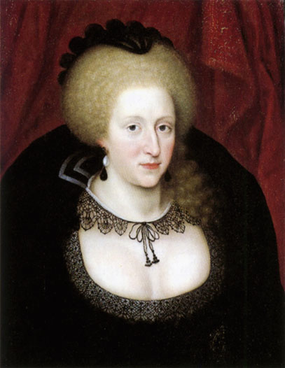

<!DOCTYPE html>
<html lang="en">
<head>
<meta charset="UTF-8">
<meta name="viewport" content="width=device-width, initial-scale=1.0">
<title>Surgical Insight Hub — Classification and Etiopathogenesis of Hypothyroidism Monograph</title>
<link href="https://fonts.googleapis.com/css2?family=Playfair+Display:wght@400;600;700&family=Source+Serif+4:ital,opsz,wght@0,8..60,300;0,8..60,400;0,8..60,600;1,8..60,300;1,8..60,400&family=JetBrains+Mono:wght@400;500&display=swap" rel="stylesheet">
<link rel="stylesheet" href="../../css/theme.css?v=4.0.0">
<link rel="stylesheet" href="../../css/shared.css">
<script>
  const savedTheme = localStorage.getItem('sih-theme') || 'light';
  if (savedTheme === 'dark') document.documentElement.setAttribute('data-theme', 'dark');
</script>
<style>
:root {
  --primary:   #4C1D95; 
  --primary-dk:#2E1065;
  --primary-lt:#F5F3FF;
  --accent:    #7C3AED;
  --accent2:   #E11D48;
  --gold:      #D97706;
  --gold-lt:   #FEF3C7;
  --red:       #E11D48;
  --red-lt:    #FFF1F2;
  --bg:        #FAFAFA;
  --bg2:       #F4F4F5;
  --border:    #E5E7EB;
  --text:      #0F172A;
  --muted:     #64748B;
  --white:     #FFFFFF;
  --sidebar-w: 320px;
}
[data-theme="dark"] {
  --bg: #0A0702;
  --bg2: #140E05;
  --text: #F3F4F6;
  --muted: #A3A3A3;
  --border: rgba(255,255,255,0.08);
  --primary-lt: #2E1065;
  --white: #140E05;
}
*,*::before,*::after{box-sizing:border-box;margin:0;padding:0;}
html{scroll-behavior:smooth;}
body{font-family:'Source Serif 4',Georgia,serif;background:var(--bg);color:var(--text);font-size:16px;line-height:1.75;}

#sidebar {
  position: fixed; top: 0; left: 0; width: var(--sidebar-w); height: 100vh;
  background: var(--primary-dk); color: #F5F3FF;
  display: flex; flex-direction: column;
  z-index: 1000; overflow: hidden;
  transform: translateX(-100%);
  transition: transform 0.3s cubic-bezier(0.4, 0, 0.2, 1);
  box-shadow: 4px 0 24px rgba(0,0,0,0.4);
}
body.sidebar-open #sidebar { transform: translateX(0); }

#sidebar-overlay {
  position: fixed; top: 0; left: 0; width: 100vw; height: 100vh;
  background: rgba(46, 16, 101, 0.7); backdrop-filter: blur(3px);
  z-index: 950; opacity: 0; pointer-events: none; transition: opacity 0.3s ease;
}
body.sidebar-open #sidebar-overlay { opacity: 1; pointer-events: auto; }

#sidebar-toggle {
  position: fixed; top: 72px; left: 24px; z-index: 900;
  background: var(--primary); color: white;
  border: none; border-radius: 30px;
  padding: 10px 18px; font-family: 'JetBrains Mono', monospace; font-size: 13px; font-weight: 600;
  letter-spacing: 0.05em; cursor: pointer; box-shadow: 0 4px 12px rgba(0,0,0,0.25);
  display: flex; align-items: center; gap: 8px; transition: all 0.2s;
}
#sidebar-toggle:hover { background: var(--accent2); transform: translateY(-2px); }

#sidebar-header{padding:20px 20px 14px;border-bottom:1px solid rgba(255,255,255,0.08);flex-shrink:0;}
#sidebar-header .logo{font-family:'Playfair Display',serif;font-size:13px;font-weight:700;color:var(--accent2);letter-spacing:0.08em;text-transform:uppercase;margin-bottom:4px;}
#sidebar-header .sub{font-size:10.5px;color:rgba(245,243,255,0.6);letter-spacing:0.04em;}
#sidebar-search{padding:10px 14px;border-bottom:1px solid rgba(255,255,255,0.05);flex-shrink:0;}
#sidebar-search input{width:100%;background:rgba(255,255,255,0.05);border:1px solid rgba(255,255,255,0.1);border-radius:6px;color:#F5F3FF;padding:6px 10px;font-size:12px;font-family:'Source Serif 4',serif;outline:none;transition:border-color 0.2s;}
#sidebar-search input::placeholder{color:rgba(245,243,255,0.4);}
#sidebar-search input:focus{border-color:var(--accent2);}
#sidebar-nav{flex:1;overflow-y:auto;padding:8px 0 20px;}
#sidebar-nav::-webkit-scrollbar{width:4px;}
#sidebar-nav::-webkit-scrollbar-thumb{background:rgba(255,255,255,0.15);border-radius:2px;}
.vol-label{font-size:9.5px;font-weight:600;letter-spacing:0.12em;text-transform:uppercase;color:var(--accent2);padding:14px 18px 4px;}
.nav-item{display:block;padding:8px 18px 8px 22px;font-size:12.5px;color:rgba(245,243,255,0.8);text-decoration:none;border-left:2px solid transparent;transition:all 0.15s;line-height:1.4;}
.nav-item:hover{color:#fff;background:rgba(255,255,255,0.03);border-left-color:rgba(225,29,72,0.5);}
.nav-item.active{color:#fff;background:rgba(255,255,255,0.06);border-left-color:var(--accent2);font-weight:600;}
.nav-item .num{font-family:'JetBrains Mono',monospace;font-size:10px;color:rgba(245,243,255,0.4);margin-right:6px;}

#main{margin-left:0; min-height:100vh;}
#hero{background:linear-gradient(135deg,var(--primary-dk) 0%,#4C1D95 60%,#2E1065 100%);color:white;padding:120px 72px 60px;position:relative;overflow:hidden;}
#hero::before{content:'';position:absolute;top:-60px;right:-60px;width:380px;height:380px;background:radial-gradient(circle,rgba(225,29,72,0.15) 0%,transparent 70%);pointer-events:none;}
#hero::after{content:'';position:absolute;bottom:0;left:0;right:0;height:3px;background:linear-gradient(90deg,var(--accent2),var(--gold),transparent);}
#hero .eyebrow{font-family:'JetBrains Mono',monospace;font-size:11px;letter-spacing:0.16em;color:var(--accent2);text-transform:uppercase;margin-bottom:14px;}
#hero h1{font-family:'Playfair Display',serif;font-size:42px;font-weight:700;line-height:1.15;margin-bottom:10px;color:#fff;}
#hero .subtitle{font-size:18px;color:rgba(255,255,255,0.8);font-style:italic;margin-bottom:28px;}
#hero .badges{display:flex;gap:10px;flex-wrap:wrap;}
#hero .badge{background:rgba(255,255,255,0.1);border:1px solid rgba(255,255,255,0.2);border-radius:20px;padding:4px 14px;font-size:12px;color:rgba(255,255,255,0.95);font-family:'JetBrains Mono',monospace;}

.content-wrap{max-width:900px;margin:0 auto;padding:40px 48px 80px;}

.callout{margin:18px 0;padding:14px 18px;border-radius:0 8px 8px 0;border-left:4px solid;font-size:14px;line-height:1.65;}
.callout .label{font-family:'JetBrains Mono',monospace;font-size:10px;font-weight:600;letter-spacing:0.12em;text-transform:uppercase;display:block;margin-bottom:4px;}
.callout.pearl{background:var(--gold-lt);border-color:var(--gold);color:var(--text);}
.callout.pearl .label{color:var(--gold);}
.callout.warn{background:var(--red-lt);border-color:var(--red);color:var(--text);}
.callout.warn .label{color:var(--red);}

@media(max-width:900px) {
  .content-wrap { padding: 20px 20px 60px; }
  #hero { padding: 80px 20px 40px; }
  #hero h1 { font-size: 30px; }
  #sidebar-toggle { top: 64px; left: 16px; }
}
</style>
<link rel="icon" type="image/png" href="../../assets/images/Surgical_Insight_Hub_Logo.png">
</head>
<body>

<nav class="nav" id="mainNav">
  <div class="nav-left">
    <a href="../../index.html" class="nav-pill">
      <div class="nav-logo-img">
        
      </div>
      <div>
        <div class="nav-brand-text">Surgical Insight Hub</div>
        <div class="nav-brand-sub">The Residency Journal</div>
      </div>
    </a>
  </div>
  <div class="nav-links-pill">
    <a href="../../index.html">Home</a>
    <a href="../../notes.html" class="active">Notes</a>
    <a href="../operative_approach.html">Playbook</a>
    <a href="../../arena.html?v=4.0.0">MCQ Arena</a>
    <a href="../../podcast.html">Podcast</a>
    <a href="../../surgery-talk.html">Surgery Talk</a>
    <a href="../../about.html">About</a>
  </div>
  <div class="nav-right">
    <button class="theme-toggle" id="themeToggle" aria-label="Toggle Theme">
      <svg id="moonIcon" viewBox="0 0 24 24" width="18" height="18"><path d="M21 12.79A9 9 0 1 1 11.21 3 7 7 0 0 0 21 12.79z"></path></svg>
      <svg id="sunIcon" style="display:none;" viewBox="0 0 24 24" width="18" height="18"><circle cx="12" cy="12" r="5"></circle><line x1="12" y1="1" x2="12" y2="3"></line><line x1="12" y1="21" x2="12" y2="23"></line><line x1="4.22" y1="4.22" x2="5.64" y2="5.64"></line><line x1="18.36" y1="18.36" x2="19.78" y2="19.78"></line><line x1="1" y1="12" x2="3" y2="12"></line><line x1="21" y1="12" x2="23" y2="12"></line><line x1="4.22" y1="19.78" x2="5.64" y2="18.36"></line><line x1="18.36" y1="5.64" x2="19.78" y2="4.22"></line></svg>
    </button>
    <a href="https://t.me/sugicalInsightHub" target="_blank" class="nav-tg-btn" title="Join Telegram">
      <svg width="18" height="18" viewBox="0 0 24 24" fill="#f0d080"><path d="M12 0C5.37 0 0 5.37 0 12s5.37 12 12 12 12-5.37 12-12S18.63 0 12 0zm5.89 8.22l-1.97 9.28c-.15.66-.54.82-1.08.51l-3-2.21-1.45 1.39c-.16.16-.3.3-.61.3l.21-3.05 5.56-5.02c.24-.21-.05-.33-.37-.12l-6.87 4.33-2.96-.92c-.64-.2-.66-.64.14-.95l11.57-4.46c.54-.19 1.01.13.83.94z"/></svg>
    </a>
    <a href="../../arena.html?v=4.0.0" class="nav-btn arena-btn">MCQ Arena</a>
  </div>
</nav>

<div class="mob-nav-overlay" id="mobNavOverlay" onclick="closeMobNav()"></div>
<div class="mob-nav-sheet" id="mobNavSheet">
  <div class="mob-nav-handle"></div>
  <a href="../../index.html" onclick="closeMobNav()">Home</a>
  <a href="../../notes.html" onclick="closeMobNav()">Notes</a>
  <a href="../operative_approach.html" onclick="closeMobNav()">Playbook</a>
  <a href="../../podcast.html" onclick="closeMobNav()">Podcast</a>
  <a href="../../surgery-talk.html" onclick="closeMobNav()">Surgery Talk</a>
  <a href="../../arena.html" onclick="closeMobNav()">MCQ Arena</a>
  <a href="../../about.html" onclick="closeMobNav()">About</a>
  <a href="https://t.me/sugicalInsightHub" target="_blank" rel="noopener" onclick="closeMobNav()" style="color: var(--brand-gold); font-weight: 800;">Join Telegram Community</a>
</div>

<button id="sidebar-toggle" onclick="toggleSidebar()">
  <span>📜</span> Chapter Navigation
</button>
<div id="sidebar-overlay" onclick="closeSidebar()"></div>

<aside id="sidebar">
  <div id="sidebar-header">
    <div class="logo">Surgical Insight Hub</div>
    <div class="sub">Thyroid Dx Textbook Series</div>
  </div>
  <div id="sidebar-search">
    <input type="text" placeholder="Search chapters..." oninput="filterNav(this.value)">
  </div>
  <nav id="sidebar-nav">
    <div class="vol-label">All 25 Endocrine Chapters</div>
    <a class="nav-item" href="endocrine_ch01_regulation_of_thyroid_function.html"><span class="num">Ch 1</span>Regulation of Thyroid Function, Synthesis, and Function of Thyroid Hormones</a>
<a class="nav-item" href="endocrine_ch02_tests_of_thyroid_function.html"><span class="num">Ch 2</span>Tests of Thyroid Function</a>
<a class="nav-item" href="endocrine_ch03_thyroid_autoantibodies.html"><span class="num">Ch 3</span>Thyroid Autoantibodies</a>
<a class="nav-item" href="endocrine_ch04_nonisotopic_thyroid_imaging.html"><span class="num">Ch 4</span>Nonisotopic Thyroid Imaging</a>
<a class="nav-item" href="endocrine_ch05_nontoxic_goiter.html"><span class="num">Ch 5</span>Nontoxic Goiter</a>
<a class="nav-item" href="endocrine_ch06_thyroid_nodule.html"><span class="num">Ch 6</span>Thyroid Nodule</a>
<a class="nav-item" href="endocrine_ch07_hashimoto_s_thyroiditis.html"><span class="num">Ch 7</span>Hashimoto´s Thyroiditis</a>
<a class="nav-item" href="endocrine_ch08_postpartum_thyroiditis_and_sil.html"><span class="num">Ch 8</span>Postpartum Thyroiditis and Silent Thyroiditis</a>
<a class="nav-item" href="endocrine_ch09_acute_and_subacute_thyroiditis.html"><span class="num">Ch 9</span>Acute and Subacute Thyroiditis</a>
<a class="nav-item active" href="endocrine_ch10_classification_and_etiopathoge.html"><span class="num">Ch 10</span>Classification and Etiopathogenesis of Hypothyroidism</a>
<a class="nav-item" href="endocrine_ch11_congenital_hypothyroidism.html"><span class="num">Ch 11</span>Congenital Hypothyroidism</a>
<a class="nav-item" href="endocrine_ch12_central_hypothyroidism.html"><span class="num">Ch 12</span>Central Hypothyroidism</a>
<a class="nav-item" href="endocrine_ch13_diagnosis_and_treatment_of_hyp.html"><span class="num">Ch 13</span>Diagnosis and Treatment of Hypothyroidism</a>
<a class="nav-item" href="endocrine_ch14_graves_disease.html"><span class="num">Ch 14</span>Graves´ Disease</a>
<a class="nav-item" href="endocrine_ch15_graves_ophthalmopathy.html"><span class="num">Ch 15</span>Graves´ Ophthalmopathy</a>
<a class="nav-item" href="endocrine_ch16_treatment_of_graves_disease.html"><span class="num">Ch 16</span>Treatment of Graves´ Disease</a>
<a class="nav-item" href="endocrine_ch17_toxic_adenoma_and_multinodular.html"><span class="num">Ch 17</span>Toxic Adenoma and Multinodular Toxic Goiter</a>
<a class="nav-item" href="endocrine_ch18_pathogenesis_of_thyroid_carcin.html"><span class="num">Ch 18</span>Pathogenesis of Thyroid Carcinoma</a>
<a class="nav-item" href="endocrine_ch19_differentiated_thyroid_carcino.html"><span class="num">Ch 19</span>Differentiated Thyroid Carcinoma of Follicular Origin</a>
<a class="nav-item" href="endocrine_ch20_medullary_carcinoma.html"><span class="num">Ch 20</span>Medullary Carcinoma</a>
<a class="nav-item" href="endocrine_ch21_anaplastic_and_other_forms_of_.html"><span class="num">Ch 21</span>Anaplastic and Other Forms of Thyroid Carcinoma</a>
<a class="nav-item" href="endocrine_ch22_new_medical_treatment_for_thyr.html"><span class="num">Ch 22</span>New (Medical) Treatment for Thyroid Carcinoma</a>
<a class="nav-item" href="endocrine_ch23_thyroid_physiology_and_thyroid.html"><span class="num">Ch 23</span>Thyroid Physiology and Thyroid Diseases in Pregnancy</a>
<a class="nav-item" href="endocrine_ch24_non_thyroidal_illness.html"><span class="num">Ch 24</span>Non-thyroidal Illness</a>
<a class="nav-item" href="endocrine_ch25_drugs_and_other_substances_int.html"><span class="num">Ch 25</span>Drugs and Other Substances Interfering with Thyroid Function</a>

  </nav>
</aside>

<main id="main">
<header id="hero">
  <div class="eyebrow">Endocrine Surgery · Chapter 10</div>
  <h1>Classification and Etiopathogenesis of Hypothyroidism</h1>
  <p class="subtitle">Structured Surgical Monograph formatted with fluid prose, inline textbook diagnostic plates, and clinical guidance.</p>
  <div class="badges">
    <span class="badge">Chapter 10</span>
    <span class="badge">Inline Plates</span>
    <span class="badge">Thyroid Dx PDF</span>
  </div>
</header>

<div class="content-wrap">
  <section class="topic">
    
    <div class="callout pearl" style="margin-bottom:28px;">
      <span class="label">🎓 TEXTBOOK MONOGRAPH — THYROID DX</span>
      Full surgical monograph extracted directly from <strong>Thyroid Pathology and Laboratory Diagnostics</strong> (Chapter 10: Classification and Etiopathogenesis of Hypothyroidism). Features complete text, formatted clinical guidance, and inline textbook figures.
    </div>
<p style="font-size:16px; line-height:1.75; margin-bottom:16px; color:var(--text);">Classification and Etiopathogenesis of Hypothyroidism Luca Chiovato, Stefano Mariotti, and Flavia Magri Contents Hypothyroidism ................................................................................. Definition and Classification of Hypothyroidism ...........................................</p>
<h3 style="font-family:'Playfair Display',serif; font-size:20px; color:var(--primary); margin:32px 0 14px; border-bottom:1px solid var(--border); padding-bottom:6px;">Epidemiology of Hypothyroidism ...........................................................</h3>

                <div style="display:flex; gap:16px; margin:20px 0; padding:16px; border-radius:14px; border:1px solid var(--border); background:var(--bg2); align-items:center;">
                  <div style="width:180px; min-width:180px; height:140px; border-radius:10px; overflow:hidden; border:1px solid var(--border); background:#fff; display:flex; align-items:center; justify-content:center; padding:6px; flex-shrink:0;">
                    
                  </div>
                  <div style="flex:1;">
                    <div style="font-family:'JetBrains Mono',monospace; font-size:11px; font-weight:700; color:var(--accent2); text-transform:uppercase; margin-bottom:6px;">Textbook Illustration &amp; Diagnostic Plate</div>
                    <div style="font-size:13.5px; color:var(--muted); line-height:1.5;">High-resolution diagnostic plate illustrating epidemiology of hypothyroidism ........................................................... in Chapter 10.</div>
                  </div>
                </div>
<ul style="margin:12px 0 20px 20px;">
<li style="margin-bottom:8px; line-height:1.65;"><strong>Etiopathogenesis of Primary</strong> Hypothyroidism ..............................................</li>
<li style="margin-bottom:8px; line-height:1.65;"><strong>Clinical Picture of</strong> (Overt) Hypothyroidism .................................................</li>
</ul>
<p style="font-size:16px; line-height:1.75; margin-bottom:16px; color:var(--text);">Metabolic Changes ........................................................................... Skin and Mucosae ........................................................................... Nervous System .............................................................................. Cardiovascular System ....................................................................... Gastrointestinal Changes .................................................................... Respiratory System .......................................................................... Musculoskeletal System ..................................................................... Renal Function ............................................................................... Hematopoietic System ....................................................................... Reproductive System ........................................................................ Other Endocrine Glands ..................................................................... Conclusion ....................................................................................... Cross-References ................................................................................</p>
<h3 style="font-family:'Playfair Display',serif; font-size:20px; color:var(--primary); margin:32px 0 14px; border-bottom:1px solid var(--border); padding-bottom:6px;">References .......................................................................................</h3>

                <div style="display:flex; gap:16px; margin:20px 0; padding:16px; border-radius:14px; border:1px solid var(--border); background:var(--bg2); align-items:center;">
                  <div style="width:180px; min-width:180px; height:140px; border-radius:10px; overflow:hidden; border:1px solid var(--border); background:#fff; display:flex; align-items:center; justify-content:center; padding:6px; flex-shrink:0;">
                    
                  </div>
                  <div style="flex:1;">
                    <div style="font-family:'JetBrains Mono',monospace; font-size:11px; font-weight:700; color:var(--accent2); text-transform:uppercase; margin-bottom:6px;">Textbook Illustration &amp; Diagnostic Plate</div>
                    <div style="font-size:13.5px; color:var(--muted); line-height:1.5;">High-resolution diagnostic plate illustrating references ....................................................................................... in Chapter 10.</div>
                  </div>
                </div>
<p style="font-size:16px; line-height:1.75; margin-bottom:16px; color:var(--text);">L. Chiovato (*) · F. Magri Department of Internal Medicine and Medical Therapy, University of Pavia - Unit of Internal Medicine and Endocrinology, IRCCS ICS Maugeri, Pavia, Italy e-mail: luca.chiovato@icsmaugeri.it; flavia.magri@icsmaugeri.it S. Mariotti Departmet of Medical Sciences and Public Health, University of Cagliari, Monserrato, CA, Italy e-mail: s.mariotti@unica.it # Springer International Publishing AG, part of Springer Nature 2018 P. Vitti, L. Hegedüs (eds.), Thyroid Diseases, Endocrinology, Abstract Hypothyroidism is a graded phenomenon characterized by a deficient thyroidal production of thyroid hormone. This condition comprises multiple functional or structural disorders, both congenital and acquired. The clinical expression of hypothyroidism varies between individuals, depending on the cause, duration, and severity of the hypothyroid state, but almost all organs and systems may be affected by a deficiency of thyroid hormone production. This chapter describes the epidemiology, multiple etiologies, and clinical manifestations of hypothyroidism. Keywords Hypothyroidism · Subclinical hypothyroidism · Classification · Epidemiology · Etiopathogenesis · Clinical features Hypothyroidism Definition and Classification of Hypothyroidism Hypothyroidism is a clinical condition characterized by reduced synthesis and secretion of the thyroid hormones thyroxine (T4) and triiodothyronine (T3). As detailed in Table 1, the most common cause of hypothyroidism is represented by loss of functional thyroid cell mass (primary hypothyroidism), which in turn may be the consequence of an autoimmune attack (such as Hashimoto’s thyroiditis), surgery, irradiation, drugs, and other more rare thyroid injuries. The distinctive features of primary hypothyroidism are represented by an increase in serum thyrotropin (TSH) concentration, which may stimulate thyroid growth and goiter formation. Primary hypothyroidism is a chronic condition which almost unavoidably leads to permanent thyroid failure, but transient hypothyroidism may be typically observed as a phase of subacute or painless thyroiditis (see ▶Chap. 8, “Postpartum Thyroiditis and Silent Thyroiditis”). Less frequently hypothyroidism is the consequence of reduced TSH and/or thyrotropin-releasing hormone (TRH) production, as observed in several pituitary and hypothalamic diseases, leading to reduced stimulation of an otherwise normal thyroid gland (secondary or central hypothyroidism). Serum TSH concen- tration is low or even undetectable in most cases of central hypothyroidism, but may be normal or even slightly high, although the absolute levels appear to be inade- quately low as compared to the low circulating thyroid hormone levels. For a complete discussion of central hypothyroidism, the reader is referred to ▶Chap. 12, “Central Hypothyroidism”.</p>
<ul style="margin:12px 0 20px 20px;">
<li style="margin-bottom:8px; line-height:1.65;"><strong>Clinical signs and</strong> symptoms of hypothyroidism may rarely be observed in condi-</li>
</ul>
<p style="font-size:16px; line-height:1.75; margin-bottom:16px; color:var(--text);">tions associated with reduced thyroid hormone activity at the tissue level, even in the presence of normal or increased thyroid hormone production. These conditions include abnormal peripheral metabolism of thyroid hormone and target tissue resis- tance to thyroid hormones. Abnormalities of deiodinating thyroid hormone metabo- lism associated with decreased central TSH secretion with low circulating T3, normal, L. Chiovato et al.</p>
<h3 style="font-family:'Playfair Display',serif; font-size:20px; color:var(--primary); margin:32px 0 14px; border-bottom:1px solid var(--border); padding-bottom:6px;">Table 1 Classification of hypothyroidism</h3>

                <div style="display:flex; gap:16px; margin:20px 0; padding:16px; border-radius:14px; border:1px solid var(--border); background:var(--bg2); align-items:center;">
                  <div style="width:180px; min-width:180px; height:140px; border-radius:10px; overflow:hidden; border:1px solid var(--border); background:#fff; display:flex; align-items:center; justify-content:center; padding:6px; flex-shrink:0;">
                    
                  </div>
                  <div style="flex:1;">
                    <div style="font-family:'JetBrains Mono',monospace; font-size:11px; font-weight:700; color:var(--accent2); text-transform:uppercase; margin-bottom:6px;">Textbook Illustration &amp; Diagnostic Plate</div>
                    <div style="font-size:13.5px; color:var(--muted); line-height:1.5;">High-resolution diagnostic plate illustrating table 1 classification of hypothyroidism in Chapter 10.</div>
                  </div>
                </div>
<p style="font-size:16px; line-height:1.75; margin-bottom:16px; color:var(--text);">Primary hypothyroidism Congenital Agenesia, dyskinesia, ectopia Dyshormonogenetic goiter Iodide transport or utilization defect (NIS or pendrin mutations) Iodotyrosine dehalogenase deficiency Organification disorders (TPO deficiency or dysfunction) Defects in thyroglobulin synthesis or processing TSH receptor defects and other forms of idiopathic TSH unresponsiveness Thyroidal Gs protein abnormalities (pseudohypoparathyroidism type 1a) Acquired Thyroiditis Autoimmune Hashimoto’s thyroiditis (goitrous and atrophic forms) Painless and postpartum thyroiditis (transient, may result in permanent thyroid failure) Other thyroiditis Subacute (transient, rarely result in permanent thyroid failure) Riedel’s thyroiditis Thyroid infiltration Amyloidosis Hemochromatosis Sarcoidosis Cystinosis Scleroderma Iodine deficiency, goitrogens in foodstuffs, pollutants Iodine excess Iatrogenic 131I Surgery External irradiation for nonthyroidal malignancy Drugs blocking synthesis or release of thyroxine Antithyroid drugs (methimazole, carbimazole, propylthiouracil) Other drugs: lithium, ethionamide, sulfonamides, iodide Tyrosine kinase inhibitors (TKIs): sunitinib, regorafenib, others Cytokines (interferon-α, interleukin-2, others) Consumptive hypothyroidism Type 3 deiodinase (D3) expression in large tumors Central hypothyroidism Congenital TSH deficiency or structural abnormality TRH and TRH receptor defects Acquired Pituitary (secondary) or hypothalamic (tertiary) disorders Bexarotene (retinoid X receptor agonist) Dopamine or severe illness Classification and Etiopathogenesis of Hypothyroidism or low T4 and normal/low TSH are typically observed in patients with nonthyroidal illnesses (NTI; see ▶Chap. 24, “Non-thyroidal Illness”), but NTI is rarely associated with significant signs and symptoms of hypothyroidism (Boelen et al. 2011; Fliers et al. 2015). Other forms of recently identified defective thyroid hormone metabo- lism, potentially leading to hypothyroidism, are consumptive hypothyroidism and congenital defects of inactive T4 conversion into active T3 (Refetoff and Dumitrescu 2007). Consumptive hypothyroidism is caused by increased inactivation of T4 and T3 by type 3 iodothyronine deiodinase (D3). Generalized resistance to thyroid hormone (RTH), due to mutations in nuclear thyroid hormone receptor (TR) or cofactors (see ▶Chap. 19, “Differentiated Thyroid Carcinoma of Follicular Origin”), is associated with increased circulating TSH and thyroid hormone concentrations (Refetoff et al. 1993) and no evident clinical hypothyroid features, although there is evidence of decreased thyroid hormone action in some tissues with higher expression of the mutant genes (Ortiga-Carvalho et al. 2014). As detailed later in this chapter, hypothyroidism is a systemic condition affecting multiple organs, and the severity of the corresponding symptoms is related to the degree of thyroid hormone deficiency, independently from the etiology of the thyroid failure. The degree of hypothyroidism is variable from severe overt hypothyroidism to milder and subtle forms currently called subclinical hypothyroidism. Although several poorly defined clinical manifestations have been associated with subclini- cal hypothyroidism, this term should be employed only to describe the condition characterized by increased serum TSH concentration in the presence of normal serum FT3 and FT4 concentrations. Long-term severe hypothyroidism is also called “myxedema”: this term derives from one of the hallmarks of long-standing thyroid failure, i.e., the nonpitting edema caused by accumulation of glycosaminoglycans in derma and other tissues. Myxedema is rarely observed today, due to very effective laboratory tools which allow early diagnosis and treatment of any form of hypothy- roidism (Devdhar et al. 2007).</p>
<h3 style="font-family:'Playfair Display',serif; font-size:20px; color:var(--primary); margin:32px 0 14px; border-bottom:1px solid var(--border); padding-bottom:6px;">Epidemiology of Hypothyroidism</h3>
<p style="font-size:16px; line-height:1.75; margin-bottom:16px; color:var(--text);">Prevalence of Hypothyroidism Primary hypothyroidism accounts for about 99% of all forms of thyroid failure. As reviewed by Vanderpump (2011), the prevalence of previously undiagnosed hypo- thyroidism is highly variable in the general population, ranging from 0.6% to 12% in women and 1.3% to 4.0% in men, with the highest values observed in elderly subjects (Parle et al. 1991; Hollowell et al. 2002). Lower prevalence of hypothy- roidism is reported in areas of mild to moderate iodine deficiency (Aghini-Lombardi et al. 1999; Knudsen et al. 1999). The prevalence of subclinical hypothyroidism (increased serum TSH with normal serum FT4 concentration (Biondi and Cooper 2008)) has been evaluated in several epidemiological surveys. In the first survey carried out in Wickham, UK (Tunbridge et al. 1977), subclinical thyroid failure was detected in 3% of men and 8% of women of all ages (10% in women over 55 years). L. Chiovato et al. In the USA 9.4% of the population had primary thyroid failure, mostly (9.0%) subclinical (Colorado study (Canaris et al. 2000), while in the National Health and Nutrition Examination Survey (NHANES III), increased TSH was detected in 4–21% of women and in 3–16% of men (Hollowell et al. 2002). In the same survey, serum TSH progressively increased with age in both genders with higher values observed in Caucasians as compared to blacks. Similar findings have been reported by Kanaya et al. (2002) in another US cohort. Iodine intake may affect the preva- lence of hypothyroidism, subclinical thyroid failure being more frequent in areas of high iodine intake (Vanderpump 2011). This phenomenon is possibly related to the effects of iodine on triggering/exacerbating thyroid autoimmunity (Laurberg et al. 2010). The high prevalence of mild forms of hypothyroidism in elderly populations reported in the above, and several other studies (reviewed by Vanderpump (2011)) deserves further comment, since the precise interpretation of these epidemiological data in terms of thyroid pathology is still unclear. According to a further analysis of NHANES III data (Surks and Hollowell 2007), a substantial proportion of subjects aged >80 years had serum TSH concentrations above the upper limit (97.5 centile) of the reference range calculated for the entire population (4.5 mIU/L). However, only 30% of these elderly subjects with serum TSH >4.5 mIU/L had serum TSH above the 97.5 centile reference range calculated in the subjects of the same age (7.49 mIU/L). This, together with the observation that only 40% of >80-year-old subjects with increased serum TSH had positive serum antithyroid antibodies, sug- gests the need of defining different serum TSH reference ranges (Surks and Hollowell 2007) in the elderly subjects. Although there is a general consensus that mild TSH elevation in older individuals may not reflect thyroid dysfunction, but rather represent a consequence of normal aging, the use of different age-specific reference ranges for TSH is not yet advocated by current guidelines for diagnosis and treatment of hypothyroidism (Garber et al. 2012; Jonklaas et al. 2014). A further difficulty in interpreting epidemiology of hypothyroidism in the elderly is represented by the frequent spontaneous recovery of subclinical thyroid failure observed in about one third of old subjects in the subsequent follow-up (Vanderpump 2011). Incidence of Hypothyroidism The Wickham cohort study, with its 20-year follow- up (Tunbridge et al. 1977; Vanderpump et al. 1995; Vanderpump 2011), represents the first study providing the incidence of overt spontaneous hypothyroidism, which was estimated to be between 0.6 new cases/1000/year in men and 3.5 new cases/ 1000/year in women. This study also identified risk factors for developing overt thyroid failure. These were a serum TSH concentration > 2.0 mIU/L and high serum levels of antithyroid peroxidase (at that time microsomal) antibodies (TPOAb). Other studies have provided similar values of standardized incidence rates of primary hypothyroidism, comprising between 3.90 and 4.89 new cases/1000/year in women and between 0.65 and 1.01 new cases/1000/year in men (Vanderpump 2011). Interestingly, from 1994 to 2001, the mean age at diagnosis of hypothyroid- ism significantly decreased in women (Vanderpump 2011). Classification and Etiopathogenesis of Hypothyroidism Etiopathogenesis of Primary Hypothyroidism Congenital and acquired conditions known to cause primary hypothyroidism are listed in Table 1: in all cases the two factors responsible for the thyroid failure are loss of functional thyroid tissue or defects in thyroid hormone biosynthesis and/or secretion. Congenital primary hypothyroidism may be the consequence of several inborn defects involving key steps needed for development and function of the thyroid gland and associated with different clinical features. These conditions include thyroid agenesis or dysplasia, several variants of dyshormonogenetic goiters, TSH receptor defects or idiopathic TSH unresponsiveness, and thyroidal Gs protein abnormalities (such as pseudohypoparathyroidism type 1a). A detailed description of the genetic and epigenetic mechanisms leading to the various forms of congenital hypothyroid- ism is beyond the scope of this chapter and the reader is referred to Chap. 11 ▶“Congenital Hypothyroidism” for a complete coverage of this field. Several conditions are responsible for acquired primary hypothyroidism and these are briefly summarized in the following paragraphs. Autoimmune Thyroiditis Autoimmune (Hashimoto’s) thyroiditis (HT) is the most frequent cause of acquired primary hypothyroidism in adults (Mariotti 2012a). HT fulfills all the classic and revised criteria proposed by Milgrom, Witebsky, and Rose (and Bona 1993) for organ-specific autoimmune diseases, such as the presence of cellular and humoral immune response to thyroid-specific antigens identified at the molecular level, the frequent association with other autoimmune diseases, and the availability of several experimental and spontaneous models of the disease. The precise cause of thyroid autoimmunity remains unknown, but it most probably results from the combination of a peculiar genetic background (Brix et al. 2000; Taylor et al. 2006) with several exogenous and endogenous environmental factors leading to the loss of immuno- logical tolerance (Ajjan and Weetman 2015; Effraimidis and Wiersinga 2014). Current understanding of thyroid autoimmune mechanisms and the clinical spectrum of HT are extensively reviewed elsewhere in this book (see ▶Chaps. 7, “Hashimoto’s Thyroiditis” and ▶8, “Postpartum Thyroiditis and Silent Thyroid- itis”). In this paragraph attention will be focused only on the cellular and humoral immune mechanism leading to thyroid damage and hypothyroidism (See Fig. 1). The major cause of autoimmune destruction of thyroid follicular cells is represented by cell-mediated cytotoxicity exerted by thyroid antigen-specific perforin-containing cytotoxic CD8+ T cells, present within the lymphocytic infiltrate in Hashimoto’s thyroiditis. Interaction between Fas (CD95) and Fas ligand (FasL) abnormally expressed on the cell surface provides an additional pathway for thyroid follicular cell destruction. The autoimmune thyroid infiltrate also contains increased number of the pro-inflammatory subsets of T-helper (TH) cells (TH1 and TH17) that locally produce several cytokines (mostly IL-2, IFN-γ, and TNF-α), which concur in thyroid destruction and self-perpetuation of the autoimmune reaction. In particular, cyto- kines stimulate the expression of HLA, co-stimulatory molecules, and chemokines L. Chiovato et al. on the surface of thyroid cells, able to increase T-cell cytotoxic potential. Other cellular and humoral immune mechanisms potentially involved in thyroid destruc- tion/hypothyroidism are antibody-dependent cell-mediated cytotoxicity (ADCC), natural killer (NK) cells, complement (C0)-fixing autoantibodies, and blocking type TSH receptor antibodies (TRBAb). With the exception of TRBAb, which has abil- ity to induce transient neonatal hypothyroidism, if transferred across placenta, the actual in vivo relevance of other thyroid antibodies has never been proven, since placental transfer of anti-Tg e and anti-TPO antibodies is devoid of any effect on fetal thyroid function. Thyroid autoimmunity is also involved in the transient hypothyroidism observed in painless postpartum and painless sporadic thyroiditis (see ▶Chap. 8, “Postpartum Thyroiditis and Silent Thyroiditis”), following the initial destructive thyrotoxic phase due to acute exacerbation of autoimmune effector mechanisms (Amino et al. 1999). Although initially the hypothyroidism appears self-limiting, up to 60% of postpartum and 20% of sporadic painless thyroiditis patients with time develop permanent hypothyroidism (Stagnaro-Green et al. 2011; Mariotti 2012b). Other Non-Autoimmune Thyroiditis With the exception of Riedel’s thyroiditis (Hennessey 2011), where thyroid failure is a frequent consequence of extensive fibrosis, other forms of non-autoimmune thyroiditis are rarely responsible of permanent hypothyroidism (5–10% in subacute De Quervain’s thyroiditis and only exceptionally in acute bacterial thyroiditis) (Lio 2012). TSH TRAb (blocking) Apopotosis CD8+ IL-1 IL-2, IFN-γ TNF-α “tigh junctions” loss TPOAb NK ADCC C’ Immune Complexes + C’ CD4+ HLA II HLA I CD4+ Th17 CD4+ Th1 TSH-R PC B TgAb, TPOAb Mf Fig. 1 Cellular and humoral immune mechanisms leading to thyroid damage in autoimmune hypothyroidism. ACDD Antibody-dependent cellular cytotoxicity, AbTPO anti-thyroid peroxidase antibody, TgAb anti-thyroglobulin antibody, TRAb TSH-receptor antibody, C0 complement Classification and Etiopathogenesis of Hypothyroidism Thyroid Infiltration Thyroid infiltration in the course of amyloidosis, hemochromatosis, sarcoidosis, cystinosis, scleroderma, and leukemia may rarely produce hypothyroidism and goiter (Singer 2013). Sarcoid infiltration of the thyroid is also associated with thyroid autoimmunity, and HT may concur with granulomatous infiltration to thyroid insuf- ficiency (Nakamura et al. 1997) Iodine Intake Hypothyroidism may result from both severe iodine deficiency and excess. Patients living in iodine-deficient areas develop goiter which is generally associated with euthyroidism due to adaptive mechanisms including increased T3 and decreased T4 thyroidal synthesis and increased activity of thyroidal deiodinases D1 and D2 (Gereben et al. 2008). However, in severe iodine deficiency (<25 mcg/day), large goiters and variable degrees of hypothyroidism ranging from sub- clinical to overt thyroid failure may be observed at any age (Zimmermann and Boelaert 2015). Dietary substances interfering with thyroid hormone synthesis (naturally occur- ring goitrogens and polluted water) (Pearce and Braverman 2009) may concur with iodine deficiency to exacerbate hypothyroidism. Natural goitrogens are present in many vegetables; cruciferous vegetables (cabbage, cauliflower, broccoli, turnip, and others) contain glucosinolates whose metabolites compete with iodine for thyroidal uptake. Other vegetables (cassava, lima beans, sweet potatoes, and others) contain cyanogenic glucosides, which are metabolized to thiocyanates competing with iodine for thyroidal uptake (Zimmermann 2009). Flavonoids contained in soy and millet may impair thyroid peroxidase (TPO) activity and could affect thyroid function in infants, while in healthy adults, soy-based products appear to have negligible effects on thyroid function (Zimmermann 2009). Unclean drinking water containing humic substances and/or industrial pollutants (resorcinol, phthalic acid, perchlorate) may also impair thyroid hormone iodination, but most of these goitrogenic substances are not able to induce hypothyroidism in conditions of coexisting iodine deficiency (Zimmermann 2009). Iodine excess (intake >1–2 mg/day) acutely inhibits iodine organification and thyroid hormone synthesis (Wolff–Chaikoff effect). Exposure to iodine excess does not cause hypothyroidism in most euthyroid subjects, due to an adaptive mechanism (escape) of the normal thyroid gland (Leung and Braverman 2014). However, patients with preexisting thyroid abnormalities (autoimmune thyroiditis; previous episode of painless, postpartum, or subacute thyroiditis or other forms of destructive thyrotoxicosis; previous partial thyroidectomy or radioiodine treatment or concom- itant use of goitrogens) may fail to escape the Wolff–Chaikoff effect and develop hypothyroidism (iodine-induced hypothyroidism) (Leung and Braverman 2014). High iodine concentration is also able to reduce the release of thyroid hormone from the thyroid (Leung and Braverman 2014). Many substances may be responsible for excess iodine intake: these include drugs (presently almost exclusively represented by amiodarone, an iodine-rich molecule employed in the treatment of ventricular and supraventricular tachyarrhythmias), kelp L. Chiovato et al. tablets, dietary supplements, topical iodinated antiseptic solutions (e.g., Betadine), and iodinated radiologic contrast agents. Among these substances, amiodarone is presently the most common source of drug-induced thyroid dysfunction. The use of this drug is associated with a high frequency of both hypo- and hyperthyroidism, hypothyroidism being more frequently observed in subjects living in iodine- sufficient areas (Martino et al. 2001). Iatrogenic Hypothyroidism Hypothyroidism may be frequently observed during treatment of hyperthyroid conditions with antithyroid drugs (methimazole, carbimazole, and propylthiouracil), and this effect is easily avoided by tapering the dose or withdrawing the drug. Administration of 131I for treating hyperthyroidism is often followed by hypo- thyroidism, but the incidence of thyroid failure is different according to the dose administered, the etiology of hyperthyroidism, and the follow-up time. In particular, hypothyroidism develops much more frequently in patients with Graves’ disease (24% after 1 year and up to 90% after 25 years) than in those with toxic multinodular goiter (4% after 1 year and 24–60% after 25 years) (Metso et al. 2004; Ross 2011; Bonnema and Hegedüs 2012). Total thyroidectomy is followed by severe permanent hypothyroidism, while the risk of hypothyroidism after hemithyroidectomy is variable. According to a recent meta-analysis (Verloop et al. 2012), the overall risk of hypothyroidism after hemi- thyroidectomy was 22%, mostly represented by subclinical hypothyroidism, while overt thyroid failure was found in about one in 25 operated patients. Interestingly, positive serum TPOAb is highly predictive of hypothyroidism after surgery. The same has also been reported for radioiodine treatment (Mariotti et al. 1986). Primary hypothyroidism (both overt and subclinical) is a frequent complication of external irradiation of the head and neck region for lymphomas and other neck or central nervous system malignancies exceeding 25–30 Gy (Hancock et al. 1995). The incidence of radiation-induced hypothyroidism depends on multiple factors, but it is generally reported between 20% and 30%, half of the events appearing within the first 5 years after treatment, with a peak after 2–3 years (Jereczek-Fossa et al. 2004). Significant risk factors for hypothyroidism are female gender, surgery involv- ing the thyroid gland, other neck surgeries, and Caucasian ethnicity (Vogelius et al. 2011). There is a radiation dose–response relation with a 50% risk of HT at a dose of 45 Gy but with considerable variation between studies (Vogelius et al. 2011). More recently, a model to predict radiation-induced hypothyroidism has been developed and validated for patients with squamous cell carcinomas of the head and neck (Rønjom et al. 2013; Rønjom et al. 2015). Significant prediction factors were thyroid volume, mean radiation dose to the thyroid, and time elapsed after radiation. In this model precise estimation of thyroid volume was particularly relevant in planning optimized treatment (Rønjom et al. 2015). Several other drugs used for treatment of disorders unrelated to the thyroid gland may cause primary hypothyroidism and/or goiter. For a detailed description of the complex interference of drugs on thyroid function, see ▶Chap. 25, “Drugs and Other Substances Interfering with Thyroid Function”. Lithium, when employed for bipolar manic- Classification and Etiopathogenesis of Hypothyroidism depressive psychosis, is associated with goiter in 40% and hypothyroidism in 20% of cases, by blocking both release and synthesis of thyroid hormones by mechanisms still poorly understood, which may include a promoting effect on thyroid autoimmunity in predisposed individuals (Lazarus 2009). Goiter and hypothyroidism have been occa- sionally observed with the use of para-aminosalicylic acid, phenylbutazone, aminoglu- tethimide, and ethionamide which interfere with iodine organification and thyroid hormone synthesis, as well as after drugs inducing the microsomal enzymes in the liver such as rifampicin and carbamazepine (Curran and DeGroot 1991). Excess iodine and iodine-containing compounds may induce hypothyroidism, as described above. Administration of cytokines (e.g., interferons and interleukins) may precipitate hypothyroidism, in general by exacerbation of preexisting autoimmune thyroiditis and by a direct cytotoxic effect on thyroid follicular cells (Tomer and Menconi 2009). In these patients, hypothyroidism is often heralded by a transient phase of destructive thyrotoxicosis (Menconi et al. 2011). The administration of the lympho- cyte depleting anti-DC52 monoclonal antibody (alemtuzumab, formerly called Campath H1) in multiple sclerosis is also often followed by development of thyroid autoimmune dysfunction, but this is almost exclusively represented by TSH receptor antibody (TRAb)-mediated hyperthyroidism indistinguishable from Graves’ disease (Coles et al. 1999; Daniels et al. 2014). A continuously growing number of novel anticancer drugs, including tyrosine kinase inhibitors (TKIs) and monoclonal antibodies, have recently been shown to induce severe endocrine disruption involving the thyroid, the pituitary, and other endocrine glands (Torino et al. 2013). Anti-CTLA4 monoclonal antibodies (ipilimumab), currently employed in patients with metastatic melanoma, may be occasionally associated with autoimmune thyroiditis but more often induce central hypothyroidism resulting from lymphocytic hypophysitis (Iwama et al. 2014). Among TKIs, severe thyroid toxicity with overt primary hypothyroidism and thyroid atrophy is observed in cancer patients treated with sunitinib and other TKIs targeting key kinase receptors in angiogenic pathways, but not other kinase receptors such epidermal growth factor receptor family or c-KIT (Torino et al. 2013). Transient destructive thyrotoxicosis, mostly subclinical, may be observed in up to 40% of patients developing sunitinib-induced hypothyroidism (Torino et al. 2013). The mechanism(s) involved in the thyroid damage is(are) still not fully understood, but de novo triggering of thyroid autoimmunity may be an important cofactor in sunitinib-induced hypothyroidism (Pani et al. 2015). Consumptive Hypothyroidism A paraneoplastic syndrome called “consumptive hypothyroidism” has recently been identified in newborns with very rare vascular tumors in the liver (hemangioendotheliomas) (Luongo et al. 2013). This syndrome results from the aberrant uncontrolled expression of type 3 deiodinase (D3) that is responsible for a severe form of hypothyroidism by inactivation of thyroid hormones T4 and T3 in tumor tissue, in spite of a normally functioning thyroid gland. This rare form of hypothyroidism affects patients in the first years of life, and has distinct features in terms of diagnosis, treatment, and prognosis, with respect to other forms of hypothyroidism. Interestingly, there is circumstantial evidence that D3 activation L. Chiovato et al. may contribute to the development of some cases of TKI-induced thyroid failure (Kappers et al. 2011)</p>
<ul style="margin:12px 0 20px 20px;">
<li style="margin-bottom:8px; line-height:1.65;"><strong>Clinical Picture of</strong> (Overt) Hypothyroidism</li>
</ul>
<p style="font-size:16px; line-height:1.75; margin-bottom:16px; color:var(--text);">Described by Gull in 1874 (Fig. 2), the full expression of acquired hypothyroidism appeared to be similar to myxedematous endemic cretinism, except for the time of onset and the absence of permanent mental retardation. The condition was also known as cachexia strumipriva, because it was mainly observed after surgical removal of the thyroid gland. Myxedema is typically characterized by skin changes, increased body weight, loss of hair and teeth, and neurological symptoms such as variable degrees of impairment of speech, movement, and intellect. Nowadays, myxedema is rarely observed, and the clinical expression of thyroid hormone deficiency usually varies between individuals depending on age, cause, duration, and severity of the hypothyroid state. The common physiopathologic feature involves a slowing of physical and mental activity and the impairment of many organ functions. Fig. 2 Gull WW, author of the description of a cretinoid state supervening in adult life in women in 1874 Classification and Etiopathogenesis of Hypothyroidism Metabolic Changes Energy Balance Thyroid hormones are involved in the regulation of energy balance in mammals, acting not only in the periphery but also in brain areas involved in the regulation of food intake and energy expenditure (Herwig et al. 2014). Triiodothyronine (T3) is responsible for about 30% of the resting energy expenditure (REE) due to its significant role in temperature homeostasis. This role is mediated by thyroid hor- mone receptor alpha (TRa), while TR beta is a key regulator of cholesterol metab- olism (Santini et al. 2014). In hypothyroid rats, mRNA expression for the thyroid hormone transporter MCT8 was found to be influenced by T3, and the expression of agouti-related protein (Agrp), a key component in the hypothalamic energy balance homeostatic mechanism, can also be regulated by T3 (Herwig et al. 2014). In patients with complete lack of thyroid hormones, due to athyreosis, REE falls between 35 and 45 percent below normal, leading to a slight net gain in energy stores. As a consequence, body weight increases (on average by 10%) due to an increase in body fat and a retention of water and salt (Fig. 3). The effect of hypo- thyroidism on appetite regulation is still debated, but in adult rats, methimazole- induced hypothyroidism impairs hypothalamic leptin signaling and the anorectic response to the peripheral administration of leptin. These findings suggest that thyroid hormones are essential for the effect of leptin on food intake. An increase of adipose tissue mass results in an increase in serum leptin, which mediates a decrease in energy intake while energy disposal increases, eventually leading to a reduction in adipose tissue mass. A large number of studies have investigated the relationship between thyroid dysfunction and circulating levels of leptin, but the results have been conflicting. As a matter of fact, the effect of hypothyroidism on Overt hypothyroidism 35 – 45 % reduction of resting energy expenditure Slight gain in energy store Increase in body fat Increase in salt and water retention</p>
<ul style="margin:12px 0 20px 20px;">
<li style="margin-bottom:8px; line-height:1.65;"><strong>10 % increase</strong> of body weight</li>
</ul>
<p style="font-size:16px; line-height:1.75; margin-bottom:16px; color:var(--text);">Fig. 3 Effects of overt hypothyroidism on body weight L. Chiovato et al. energy balance might be largely independent of leptin. Indeed, in animal models, hypothyroidism induces a negative energy balance by reducing food intake due to the modulation of hypothalamic mediators in the arcuate nucleus, namely, an increase of proopiomelanocortin (POMC) and a decrease of neuropeptide Y (NPY) with consequent predominance of the anorexigenic pathway (Calvino et al. 2016). Protein Metabolism Hypothyroidism is a condition of positive nitrogen balance, despite a reduction of both synthesis and degradation of protein. In contrast, treatment of myxedema is accompanied by a marked but temporary negative nitrogen balance, due to mobili- zation of extracellular protein. Carbohydrate Metabolism Low thyroid hormone levels impair the ability of insulin-mediated translocation of glucose by the glucose transporter 4 (GLUT-4), thus reducing intestinal glucose absorption and promoting insulin resistance. Hypothyroidism is also associated with a reduced hepatic glucose production. The reduction of hepatic glucose production and its intestinal absorption are balanced by a slower glucose metabolism and by a diminished utilization (Guastamacchia et al. 2015). Indeed, in hypothyroid patients, the intravenously glucose tolerance test is characterized by a prolonged glucose disappearance rate, despite a normal peak value in magnitude and in time of oc- currence. The insulin response is blunted and slightly delayed. The occurrence of hypoglycemia in hypothyroid patients should alert the physician to concomitant diseases (e.g., hypopituitarism or Addison’s disease). The development of hypothy- roidism in patients with insulin-dependent diabetes mellitus may require lowering of the insulin dose to counteract the decreased rate of insulin degradation. Similarly, in diabetic patients treated with glucose-lowering drugs, the development of hypo- thyroidism may increase the risk of hypoglycemia due to reduced endogenous production of glucose. Lipid Metabolism Thyroid hormones have multiple effects on the regulation of lipid synthesis, absorption, and metabolism. Therefore, overt and subclinical hypothyroidism significantly affects the lipid profile and promotes cardiovascular disease. A recent study evaluating lipid profile and TSH levels in a large Spanish population including euthyroid and hypo- thyroid individuals identified a serum TSH level cutoff of 2.57 mU/l for detecting significant differences in circulating lipid levels (Santos-Palacios et al. 2013). The main changes in lipid profile (Table 2) are characterized by increased total and low-density lipoprotein (LDL) cholesterol levels with increased or normal high-</p>
<h3 style="font-family:'Playfair Display',serif; font-size:20px; color:var(--primary); margin:32px 0 14px; border-bottom:1px solid var(--border); padding-bottom:6px;">Table 2 Changes in lipid</h3>
<p style="font-size:16px; line-height:1.75; margin-bottom:16px; color:var(--text);">profile in overt hypothyroidism " Total and LDL cholesterol " = HDL cholesterol " HDL2 subfraction " = Triglycerides Classification and Etiopathogenesis of Hypothyroidism density lipoprotein (HDL) levels. Usually, the HDL2 subfraction, and not the HDL3, is elevated. Triglyceride levels are normal or slightly elevated due to a decreased lipoprotein lipase activity, although the levels of lipoprotein (a) may be increased (Duntas and Brenta 2012). Hypothyroidism-related lipid abnormalities are second- ary to a decreased biosynthesis and degradation of lipoproteins, resulting in the reduction of catabolic pathways. The reduction in the number of LDL receptors causes an excess of circulating LDL particles, which are also susceptible to increased oxidation. A reduced activity of the enzymes lipoprotein lipase and hepatic lipase and of the cholesteryl ester transfer protein (CETP) is found in hypothyroidism.</p>
<h3 style="font-family:'Playfair Display',serif; font-size:20px; color:var(--primary); margin:32px 0 14px; border-bottom:1px solid var(--border); padding-bottom:6px;">Treatment of overt hypothyroidism with LT4 reverses lipid abnormalities.</h3>
<p style="font-size:16px; line-height:1.75; margin-bottom:16px; color:var(--text);">Skin and Mucosae The skin manifestations of overt, long-standing hypothyroidism have been described since the 1800s. Myxedema, the original name for hypothyroidism, referred to the edema-like skin condition caused by increased glycosaminoglycan and protein deposition in the interstitial spaces of the skin. The clinical picture is a nonpitting swelling, most marked around the eyes and hands (Safer 2012). The skin in hypothyroidism is rough, dry, and cool and covered with fine scales, particularly on the extensor extremities (35–37). These changes are frequent (80% of hypothy- roid patients) and are related to a decreased cutaneous metabolism, reduced secretion of sweat and sebaceous glands, vasoconstriction, thinning of the epidermis, and hyperkeratosis of the stratum corneum. The skin is usually pale because of the excess fluid and mucopolysaccharide content in the dermis, vasoconstriction, and anemia. Increased dermal carotene may contribute to yellow hue on the palms, soles, and nasolabial folds. The palpebral fissure may be narrowed due to diminished tone of the sympathetic nervous fibers to Müller’s levator palpebra superior muscle. Loss of the lateral third of the eyebrow may be observed (Queen Anne’s sign) (Fig. 4). The hair is dry, coarse, and slow growing. A similar picture may be observed for nails which present as thickened, brittle, and slow growing. Candida folliculitis may sometimes affect hypothyroid patients. The enlarged tongue may result in a husky, low-pitched, and coarse voice, as well as in a low and deliberate speech. Nowadays, this picture is very rare and the vast majority of patients have very vague symptoms and subclinical disease. Nervous System The central nervous system is an important target of thyroid hormones as also shown in animal models where deprivation of thyroid hormone during critical periods of brain development affects processes such as neuronal migration, outgrowth and differentiation, synaptogenesis, myelination, and glial cell proliferation. In humans, fetal and neonatal hypothyroidism leads to severe intellectual deficits, abnormal balance, impaired fine motor skills, spasticity, and deafness according to the timing L. Chiovato et al. of the onset of thyroid hormone action in the developing brain (Heuer 2007). The onset of hypothyroidism in adult life causes less severe neurological manifestations that usually regress after substitution treatment (Table 3). Early studies found that regional cerebral blood flow and measures of regional brain metabolic activity, such as cerebral glucose metabolism, were decreased in Fig. 4 Anne of Denmark (1612) portraiture showing the thinning or loss of the outer third of the eyebrows</p>
<h3 style="font-family:'Playfair Display',serif; font-size:20px; color:var(--primary); margin:32px 0 14px; border-bottom:1px solid var(--border); padding-bottom:6px;">Table 3 Neurologic,</h3>
<p style="font-size:16px; line-height:1.75; margin-bottom:16px; color:var(--text);">cognitive, and psychiatric effects of overt hypothyroidism Neurological symptoms and signs Somnolence, lethargy Slow speech Delayed relaxation of deep tendon reflexes Ataxia Sensory–motor polyneuropathy EEG changes Dizziness, vertigo, and tinnitus Deafness Mood and cognitive changes Anxiety and depression Memory deficits Calculation difficulties Myxedema madness Classification and Etiopathogenesis of Hypothyroidism hypothyroidism, thus suggesting a decreased brain activity and/or a reduction of central blood flow as a consequence of increased vascular resistance. More recently, 32P nuclear magnetic resonance spectroscopy of the frontal lobe of the adult hypo- thyroid patients reported reversible alterations in phosphate metabolism, suggesting impairment of mitochondrial metabolism (Constant et al. 2001). Positron emission tomography (PET) studies have reported decreased glucose metabolism in hypothy- roid patients in many regions of the brain including the hippocampus. Voxel-based morphometry (VBM) studies have demonstrated gray and white matter volume reduction in different brain regions (Singh et al. 2016). Furthermore, a significant decrease of glutamate and myoinositol levels in the hippocampus of hypothyroid patients, persisting after the restoring of euthyroidism, has been demonstrated by in vivo proton magnetic resonance spectroscopy. Collectively, these studies indicate that even in adults, the thyroid hormones influence metabolism and structure and function of the brain. Neurological Signs and Symptoms In long-standing and severe hypothyroidism, ataxia, intention tremor, nystagmus, and dysdiadochokinesis have been described, possibly caused by deposition of mucinous material in the cerebellar tissue. A delayed relaxation phase of the deep tendon reflexes is more frequently observed. These signs promptly revert after thyroid hormone replacement therapy. The absence of alpha waves and the presence of low-amplitude theta and delta waves may sometimes be present on EEG. In the past, neurologic complaints were reported by up to 80% of patients with hypothyroidism. Most of these patients, having a severe long-standing hypothyroid- ism, complained of major neurological symptoms, such as burning and lancinating extremity pain due to a sensory–motor polyneuropathy with a distal–proximal pro- gression, first involving the lower limbs and then the upper ones. These major neurologic complaints are nowadays rarely observed, probably due to earlier diag- nosis and adequate correction of hypothyroidism with levothyroxine (LT4). A meta- chromatic infiltrate was also described in the lateral femoral cutaneous and sural nerves, together with axon cylinder degeneration. More recently, a reduction in the intraepidermal nerve fiber density, associated with a small-fiber sensory neuropathy, was observed (Magri et al. 2010). Vestibular abnormalities and both nerve and conduction deafness are reported. More frequent symptoms are dizziness, vertigo, and tinnitus, suggesting damage of the eighth cranial nerve, the labyrinth, or possibly the cerebellum. Thyroid hormone replacement therapy significantly improves hearing defects associated with hypo- thyroidism, unlike with the sensorineural deafness of Pendred’s syndrome. A defi- ciency in the pigment retinene may be responsible for rare cases of night blindness. Hashimoto encephalopathy is a steroid-responsive encephalopathy, associated with elevated TPOAbs without brain tumor, stroke, or infection of the central nervous system. The clinical presentation includes behavioral changes, confusion, cognitive decline, stroke-like episodes, amnestic syndrome, ataxia, seizures, and myoclonus. The condition is thought to be of autoimmune rather than metabolic origin (Zhou et al. 2017). L. Chiovato et al. Mental Symptoms In adults with hypothyroidism, memory, and in particular the verbal component, is impaired. Changes in overall intelligence, attention, concentration, perceptual func- tion, language, and psychomotor function are reported. A prospective, open-label interventional study found a specific deficit in memory rather than a general cogni- tive slowing in overtly hypothyroid patients (Correia et al. 2009). Usually, these mental symptoms are reverted by treatment with LT4, although not completely in all cases. Functional imaging studies have demonstrated decrease in cerebral blood flow and function, both globally and in regions that mediate attention, visuospatial processing, working memory, and motor speed (Correia et al. 2009; Nagamachi et al. 2004). Psychiatric Symptoms Slowing of thought and speech is frequently found in hypothyroid patients, together with decreased attentiveness and apathy. Agitation and psychosis, the so-called myxedema madness, is nowadays rare if ever observed. These symptoms usually revert with thyroid hormone replacement therapy. The most frequent psychiatric condition associated with hypothyroidism is de- pression, probably due to a reduced activity of 5-hydroxytryptamine in the brain. A recent Danish observational cohort study demonstrated an increased risk of being diagnosed with a psychiatric disorder and an increased risk of being treated with antipsychotics, both before and after the diagnosis of hypothyroidism (Thvilum et al. 2014). As a matter of fact, administration of high-dose T4 or T3 might potentiate the effect of tricyclic antidepressant drugs. Cardiovascular System The actions of thyroid hormones (particularly T3) on the heart are mediated by genomic and non-genomic mechanisms targeted to membrane proteins, cytoskeletal components, and organelles. The genomic actions are mediated by nuclear receptors (TR) alpha and beta, the former being predominantly represented in the heart (Table 4). T3-activated TR regulates myosin heavy chain (MHC) genes (encoding for the two contractile protein isoforms of the thick filament of the cardiomyocyte). T3 regulates the expression of the sarcoplasmic reticulum Ca2þ (SERCa2þ) whose function is to sequester calcium in the sarcoplasmic reticulum during the relaxation phase of myocyte contraction. T3 also inhibits the expression and the degree of phosphorylation of the membrane protein phospholamban (PLB), a key regulator of SERCa2beta. In hypothyroidism, changes of SERCa2beta and PLB are responsible for an impaired diastolic function. Other T3-responsive cardiac genes are the ones encoding for Na1/K1-ATPase, beta1-adrenergic receptor, atrial natriuretic hormone, voltage-gated potassium channels (positively regulated) and adenylyl cyclase cata- lytic subunits, thyroid hormone receptor alpha-1, Na/Ca exchanger, thyroid hormone transporters (MCT8), and adenine nucleotide translocase-1 (ANT1 (negatively reg- ulated)) (Danzi and Klein 2014). Classification and Etiopathogenesis of Hypothyroidism The original description of the myxedema heart, as reported by Zondek in 1918, included an enlarged cardiac silhouette associated with diminished heart sounds, caused by pericardial effusion. Interstitial edema and swelling of muscle fibers with loss of striations were reported as the main histologic features of the myxedema heart. Although this typical picture is nowadays rarely observed, cardiovascular changes are frequently reported in hypothyroid patients. Systemic manifestations typically include a reduction of pulse rate, of stroke volume, and, as a consequence, of cardiac output. Other commonly observed cardiovascular features of hypothy- roidism are increased systemic vascular resistance, systolic and diastolic dysfunc- tion, decreased cardiac preload, and cardiomegaly (Table 5). As a consequence, hypothyroid patients carry an excess risk of being diagnosed with cardiovascular diseases before the diagnosis of hypothyroidism, excess risk persisting also thereaf- ter (Thvilum et al. 2013). Characteristic electrocardiographic features of overt hypothyroidism are low-voltage complexes, flat or negative T waves, sinus brady- cardia, and prolonged QTc, which might cause torsade de pointes ventricular tachycardia. ECG abnormalities, which are related to histologic changes of the myocardium and to the presence pericardial effusion, can resolve upon thyroid hormone replacement therapy. Bradycardia, due to sinus node dysfunction, may be responsible for failure of the heart rate to accelerate in stress conditions, such as</p>
<h3 style="font-family:'Playfair Display',serif; font-size:20px; color:var(--primary); margin:32px 0 14px; border-bottom:1px solid var(--border); padding-bottom:6px;">Table 5 Cardiovascular and electrocardiographic features of hypothyroidism</h3>
<p style="font-size:16px; line-height:1.75; margin-bottom:16px; color:var(--text);">Cardiovascular features Electrocardiographic features Reduction of Low-voltage complexes Pulse rate Stroke volume Cardiac output Cardiac preload Increase of Flat or negative T waves Systemic vascular resistance Systolic and diastolic dysfunction Sinus bradycardia Cardiomegaly Prolonged QTc (possible cause of cause torsade de pointes ventricular tachycardia)</p>
<h3 style="font-family:'Playfair Display',serif; font-size:20px; color:var(--primary); margin:32px 0 14px; border-bottom:1px solid var(--border); padding-bottom:6px;">Table 4 Thyroid hormone genomic actions on the heart</h3>
<p style="font-size:16px; line-height:1.75; margin-bottom:16px; color:var(--text);">Positive effects on expression Negative effects on expression Sarcoplasmic reticulum Ca2þ Phospholamban Alpha myosin heavy chain Beta myosin heavy chain Beta1-adrenergic receptor Thyroid hormone receptor alpha-1 Na1/K1-ATPase Na1/Ca21 exchanger Atrial natriuretic hormone Adenylyl cyclase catalytic subunits Voltage-gated potassium channels Thyroid hormone transporters (MCT8) L. Chiovato et al. fever, infection, or cardiovascular failure. The sinus dysfunction is usually propor- tional to the decrease in the body’s metabolic rate. A prolonged circulation time is frequently observed in overt hypothyroidism. In most tissues the decrease in blood flow results in a proportional reduction in oxygen consumption. As a consequence, the arteriovenous oxygen difference remains normal or slightly increased. Venous pressure is normal while peripheral arterial resistance is increased. Indeed, the mean arterial pressure rises, and 20% of hypothyroid patients have diastolic hypertension. Endothelial dysfunction contributes to hypertension due to its effects on atherosclerosis and increased arterial stiffness. In nearly 50% of patients with hypothyroidism and hypertension, a severe impairment of the elastic properties of the aorta may be responsible for the incomplete normalization of blood pressure after replacement therapy. Congestive heart failure may occur in severe or untreated hypothyroidism particularly when underlying heart disease is present. In this regard it is worth noting that conventional cardiac drugs, such as glycosides or digoxin, might be less effective or poorly tolerated in hypothyroid patients. Autopsy studies first reported an increased risk of atherosclerosis in hypothyroid patients. Pathogenic links include increased arterial stiffness, systemic vascular resistance, and hypothyroidism- induced dyslipidemia, which is characterized by high levels of LDL cholesterol and of the atherogenic LDL variant and apolipopro- tein B. Other independent risk factors for coronary atherosclerosis such as hyper- homocysteinemia, high levels of C-reactive protein, and coagulation abnormalities may be observed in hypothyroid patients. Angina pectoris may occur before treat- ment of hypothyroidism, usually reflecting a poor myocardial oxygenation. More frequently, angina pectoris worsens or appears for the first time after starting thyroid hormone replacement therapy, suggesting a coronary flow impairment. Gastrointestinal Changes Gastrointestinal manifestations of hypothyroidism are not rare and involve different digestive organs (Table 6). Modest weight gain, mainly due to fluid accumulation, in spite of reduced appetite, can occur in hypothyroidism. Oropharyngeal dysphagia, esophagitis, and hiatus hernia are described. Both the mean esophageal transit time and the gastric emptying time are reported as markedly increased in hypothyroid patients, when assessed by endoscopy and scintigraphy (Yaylali et al. 2009). This delay is mainly in the emptying phase. The prolonged gastric emptying time tends to resolve with hypothyroidism treatment. The reduction of peristalsis is the main cause of constipation, which remains the most frequent gastrointestinal complaint. An impairment of the Cl/HCO3- anion exchange also contributes to the reduced intestinal motility. However, the syndrome of ileus, megacolon, or colonic pseudo-obstruction is a rare event, usually associated with severe hypothyroidism or myxedema coma. More than one-half of hypothyroid patients show a small intestinal bacterial overgrowth frequently persisting after the Classification and Etiopathogenesis of Hypothyroidism establishment of euthyroidism. In these cases, antibiotic therapy may be necessary (Ebert 2010). Changes in liver function tests are present in about half of patients with hypothyroidism, despite normal hepatic histology. Hypothyroidism increases the risk of gallstones due to a reduced gallbladder motility and bilirubin excretion and increased serum cholesterol. Nonalcoholic fatty liver disease (NAFLD) is also frequently observed in hypothyroidism. In a case–control study, hypothyroidism was found to be significantly associated to an increased risk of hepatocellular carcinoma, even after adjustment for other known risk factors (Hassan et al. 2009). When hypothyroidism is due to autoimmunity, autoimmune disorders of the digestive system, such as pernicious anemia, celiac disease, inflammatory bowel disease, and primary biliary cirrhosis, may be present. The coexistence of pernicious anemia causes vitamin B12 deficiency and bone marrow megaloblastosis. The prevalence of celiac disease in hypothyroid patients ranges between 3% and 5%, while the prevalence in the general populations is about 1%. In contrast, autoimmune thyroid diseases may be present in 6–20% of individuals with celiac disease. In fact, celiac disease and other conditions with malabsorption are the commonest cause of treatment refractory hypothyroidism. Respiratory System Patients with overt, long-standing hypothyroidism may complain about shortness of breath, sputum production, cough, wheezing, and airway hyperresponsiveness. Pleural effusion was described as a cause of respiratory symptoms, but depression of the respiratory center in the brain, neuropathy, and myopathy changes due to hypothyroidism may also have a pathogenic role (Fig. 5). However, these data must be interpreted with caution because a recent systematic review on the respiratory manifestations of hypothyroidism found substantial biases in all studies addressing the impact of hypothyroidism on respiratory symptoms and ventilation. The curative effect of LT4 substitution on ventilation is also controversial, because the two studies</p>
<h3 style="font-family:'Playfair Display',serif; font-size:20px; color:var(--primary); margin:32px 0 14px; border-bottom:1px solid var(--border); padding-bottom:6px;">Table 6 Gastrointestinal manifestations of hypothyroidism</h3>
<p style="font-size:16px; line-height:1.75; margin-bottom:16px; color:var(--text);">Weight gain (modest) Increased liver function tests Oropharyngeal dysphagia, esophagitis, and hiatus hernia Increased esophageal transit time and gastric emptying time Constipation Increased risk for nonalcoholic fatty liver disease Small intestinal bacterial overgrowth Increased prevalence ofa: Pernicious anemia Celiac disease Inflammatory bowel disease Primary biliary cirrhosis aWhen hypothyroidism is dependent on an autoimmune thyroid disease L. Chiovato et al. included in the review gave opposing results (Sorensen et al. 2016). The strength of the diaphragmatic muscle is reduced in hypothyroid patients. The few available studies report an improvement by either LT4 or LT3 treatment. The forced vital capacity (FVC) and the forced expiratory volume in 1 second (FEV1) may be reduced in overt hypothyroidism. Nocturnal breathing abnormalities are frequently reported in overt hypothyroid patients. In particular obstructive sleep apnea syndrome (OSAS) may be found in up to 30% of affected patients (Jha et al. 2006). Several factors may predispose hypothyroid patients to the development of OSAS, such as the increased size of the tongue and of pharyngeal skeletal muscles, a slow and sustained pharyngeal muscle contraction pattern, and diminished neural output by the respiratory center. After LT4 replacement therapy, apnea periods, oxygen desaturation events, and snoring usually improve (Sorensen et al. 2016). Musculoskeletal System Muscles Thyroid hormone signaling is required for skeletal muscle development, contractile function, and muscle regeneration (Salvatore et al. 2014). Thus, hypothyroid patients frequently report pain, cramps, stiffness, easy fatigability, and weakness, symptoms which are aggravated by exposure to cold. Physical examination shows muscle hypertrophy, proximal muscle weakness, and delayed relaxation phase of deep tendon reflexes (Table 7). Hoffman’s syndrome is a rare form of hypothyroid myopathy first described in 1897 and characterized by proximal weakness and pseudohypertrophy of muscles. The same clinical picture in children with cretinism is referred to as Kocher–Debré–Sémélaigne syndrome. The serum levels of muscle enzymes, such as CK, myoglobin, and lactate dehydrogenase, are frequently elevated, but electromyography is often normal. At histology the hypothyroid muscle shows atrophy of type II muscle fibers, relative Shortness of breath Increased sputum production Cough Wheezing Airway hyper-responsiveness Reduced strength of the diaphragmatic muscle Pleural effusion Depression of brain respiratory center Neuropathy and myopathy Fig. 5 Respiratory changes during overt hypothyroidism Classification and Etiopathogenesis of Hypothyroidism hypertrophy in type I muscle fibers, increase in the percentage of type I fibers, presence of internalized nuclei, and core-like structures. In most cases symptoms resolve after replacement therapy (Anwar and Gibofsky 2010). Reflex contraction and relaxation time is prolonged and it is also known as Woltman’s sign. The pathophysiology of delayed reflex relaxation is related to a severe reduction of Ca 2+  ATPase activity of the fast-twitch variety (SERCA1) in hypothyroidism, with impairment of calcium reuptake as a consequence, and to a reduction of muscle levels of myosin ATPase. Carpal tunnel syndrome may be associated with hypothyroidism. Bone and Joints In the adult skeleton, thyroid hormone deficiency leads to a reduction of osteoclast- induced reabsorption and of osteoblast-induced formation resulting in a low bone turnover, a slowing of the remodeling process, and an increase of the time taken in the remodeling cycle. Bone mass may be normal or slightly increased (Fig. 6). However, hypothyroid patients show a two- to threefold increased risk of fracture. In some patients fractures may occur before bone mass reaches levels compatible with osteoporosis, reflecting an impairment of bone quality (Bassett et al. 2010). Interestingly, recent data suggest that high TSH levels may be linked to the risk of osteoporotic fractures only in young and middle-aged men, while in</p>
<h3 style="font-family:'Playfair Display',serif; font-size:20px; color:var(--primary); margin:32px 0 14px; border-bottom:1px solid var(--border); padding-bottom:6px;">Table 7 Musculoskeletal symptoms, signs, and laboratory findings in hypothyroidism</h3>
<p style="font-size:16px; line-height:1.75; margin-bottom:16px; color:var(--text);">Symptoms Sign Lab findings Pain, cramps Muscle hypertrophy Increased CK, myoglobin, and lactate dehydrogenase levels Stiffness Proximal muscle weakness Electromyography is often normal Easy fatigability and weakness Delayed relaxation phase of deep tendon reflexes Atrophy of type II muscle fibers and relative hypertrophy in type I muscle fibers reduction of osteoclast-induced reabsorption Osteoblasts Osteoclast reduction of osteoblast-induced formation Low bone turnover Slowing of the remodeling process Increase of the time taken in the remodeling cycle Fig. 6 Effects of thyroid hormone deficiency on the bone remodelling cycle L. Chiovato et al. postmenopausal women, the long-term risk of hip and other osteoporotic fractures is strongly related to the cumulative duration of LT4 overtreatment (Abrahamsen et al. 2015). Increased serum levels of PTH are frequently observed in hypothyroidism, prob- ably due to a resistance to the action of PTH. Serum 1,25-dihydroxycholecalciferol levels are consequently increased. The concentrations of calcium and phosphorus in serum are usually normal, but calcium may be slightly elevated due to the effects of the increase in PTH and vitamin D. Serum alkaline phosphatase and osteocalcin levels are often decreased. Hypothyroidism may share some symptoms with rheumatic disease, but the coexistence of rheumatoid arthritis, seronegative spondyloarthropathies, psoriatic arthritis, and fibromyalgia should be considered. Renal Function Thyroid hormones play an important role in growth and development of the kidney and in water and electrolyte homeostasis. However, hypothyroidism is normally not associated with significant impairment of renal function, with the exception of those patients with coexisting advanced renal disease. The glomerular filtration rate and the renal plasma flow are usually reduced in overt hypothyroidism and normalize after replacement therapy. The mechanisms involved are increased peripheral resistance and reduction of myocardial contractility and stroke volume, hyperlipidemia, and paracrine or endocrine mechanisms mediated by insulin-like growth factor type 1 and vascular endothelial growth factor (Iglesias and Diez 2009). In more than half of hypothyroid patients, serum creatinine levels are elevated. In these patients the occurrence of hyponatremia is frequent. Hyponatremia is mainly related to a reduction of the glomerular filtration rate causing a reduced water delivery to the distal diluting segment of the nephron. Hyponatremia may be also due to an inappropriate ADH secretion syndrome-like disorder. In spite of reduced renal blood flow and blood volume, the total body sodium content is increased, probably resulting from binding to extracellular mucopolysac- charides. No significant changes in serum potassium are reported, while magnesium as well as homocysteine concentration may be elevated. Hematopoietic System Studies on the influence of thyroid hormones, through their receptors (TRa-1 and TRb-1), on hematopoiesis in patients with hypothyroidism demonstrate a mod- ulation of cell production in the bone marrow. The prevalence of anemia in overt hypothyroidism is high, ranging from 30% in adults and 60% in children and adolescents. Classification and Etiopathogenesis of Hypothyroidism Usually anemia is normochromic normocytic and caused by bone marrow depres- sion and decreased production of erythropoietin due to a reduced need of oxygen. A hypocellular structure of the bone marrow with fat tissue infiltration may be observed. Anemia may also be macrocytic, as a consequence of reduced absorption of vitamin B12, as observed in pernicious anemia due to intrinsic factor deficiency. Reduced iron absorption resulting from autoimmune gastritis and achlorhydria may lead to microcytic anemia. In hypothyroid women menorrhagia is frequent and causes iron deficiency contributing to microcytic hypochromic anemia (Table 8) (M’Rabet-Bensalah et al. 2016). In overt hypothyroidism clotting abnormalities may be observed. In most cases only abnormal laboratory findings are present but sometimes clinically significant episodes of bleeding are described. The main coagulopathy described in hypothyroidism is the acquired von Willebrand syndrome type 1. This coagulopathy should be taken into account when planning invasive procedures in hypothyroid patients. The mild or moderate acquired von Willebrand syndrome is reversible after restoration of euthyroidism. Laboratory findings indicating prolongation of activated partial thromboplastin time (aPTT), prothrombin time (PT) and clotting time, reduction in factor VIII activity, and vWF and platelet levels indicating a hypocoagulation state have been described. On the other hand, there are also data suggesting existence of a hypercoagulation and hypofibrinolytic state, particularly in subclinical or moderate hypothyroidism (Kyriakakis et al. 2016). Reproductive System Men The main laboratory findings in male hypothyroid patients are a decrease in sex hormone binding globulin (SHBG) and total testosterone concentrations, while free testosterone may be either normal or reduced. Luteinizing hormone (LH) and follicle-stimulating hormone (FSH) serum levels are normal but may exhibit a blunted response to GnRH stimulation. Dehydroepiandrosterone (DHEA), DHEA sulfate, and androstenediol and its sulfate and pregnenolone sulfate are decreased in men with hypothyroidism, compared with normal controls (Table 9) (Krassas and Pontikides 2004). The most frequent complaints are decreased libido or impotence. Several studies have shown abnormalities in sperm morphology in hypothyroid men. These abnormalities improve or normalize when euthyroidism is restored. Little is</p>
<h3 style="font-family:'Playfair Display',serif; font-size:20px; color:var(--primary); margin:32px 0 14px; border-bottom:1px solid var(--border); padding-bottom:6px;">Table 8 Types and causes</h3>
<p style="font-size:16px; line-height:1.75; margin-bottom:16px; color:var(--text);">of anemia in overt hypothyroidism Types Causes Normochromic normocytic anemia Bone marrow depression and decreased production of erythropoietin Macrocytic anemia Reduced absorption of vitamin B12 Microcytic anemia Reduced iron absorption, menorrhagia L. Chiovato et al. known about the effect of hypothyroidism on male fertility. According to Poppe et al. (2006), the prevalence of thyroid dysfunction and autoimmunity are similar in men with normal and abnormal semen characteristics. For this reason, screening for thyroid disorders is not recommended in infertile men. The testicles are histologi- cally immature if hypothyroidism precedes puberty and show tubular involution if onset is after puberty. In children, precocious sexual development has been reported (Anasti et al. 1995). Women The serum levels of SHBG and both total testosterone and E2 are decreased, but their unbound fractions are increased. FSH and LH are usually normal, but some- times their response to GnRH stimulation is delayed or blunted, probably due to the increased prolactin levels (Table 10). Anovulation and inadequate secretion of progesterone are frequently associated with proliferative endometrium. The frequency of menstrual disturbances, and particularly of oligomenorrhea, is high in hypothyroid women. Studies focusing on the role of overt hypothyroidism as a cause of infertility are scarce and limited in the number of subjects examined. In contrast, many studies have evaluated the association between hypothyroidism and obstetrical/neonatal morbidity. When compared to euthyroid women, pregnant women with overt hypothyroidism have a higher risk of spontaneous abortion during early gestation, gestation-induced hypertension (and/or preeclampsia), placental abruption, preterm delivery, low birth weight, stillbirth, and/or perinatal death (Krassas et al. 2010). Euthyroid neonates born to mothers who were hypothyroid during pregnancy have been reported to achieve a lower IQ later in life (Haddow et al. 1999).</p>
<h3 style="font-family:'Playfair Display',serif; font-size:20px; color:var(--primary); margin:32px 0 14px; border-bottom:1px solid var(--border); padding-bottom:6px;">Table 10 Pituitary–</h3>
<p style="font-size:16px; line-height:1.75; margin-bottom:16px; color:var(--text);">gonadal changes in female hypothyroid patients SHBG # Estradiol # Free estradiol = " Total testosterone # Free testosterone = " LH and FSH = blunted responses to GnRH stimulation Prolactin "</p>
<h3 style="font-family:'Playfair Display',serif; font-size:20px; color:var(--primary); margin:32px 0 14px; border-bottom:1px solid var(--border); padding-bottom:6px;">Table 9 Pituitary–gonadal</h3>
<p style="font-size:16px; line-height:1.75; margin-bottom:16px; color:var(--text);">changes in male hypothyroid patients SHBG # Total testosterone # Free testosterone = # LH and FSH = blunted responses to GnRH stimulation DHEA, DHEA sulfate, androstenediol and its sulfate and pregnenolone sulfate # Classification and Etiopathogenesis of Hypothyroidism Other Endocrine Glands Pituitary Long-standing primary hypothyroidism may cause enlargement of the pituitary sella. The prevalence of hyperprolactinemia in overt hypothyroidism is 40% and usually normalizes with L-thyroxine treatment. Elevated prolactin levels may be due to the influence of increased TRH levels as well as to a decreased prolactin clearance. Hypothyroidism is a well-known cause of growth retardation, because growth hor- mone (GH) secretion and GH action are deficient in hypothyroid children. GH response to insulin-induced hypoglycemia may be also impaired. GH secretion is decreased as a consequence of an increase in hypothalamic somatostatinergic tone and results in low serum levels of IGF-1, IGF-2, IGFBP-1, and IGFBP-3 concen- trations. These changes are reversible after thyroid hormone replacement therapy. Adrenal Glands Idiopathic isolated ACTH deficiency is a rare condition of unclear etiology. When present, it may be associated with thyroid disease and particularly with primary hypothyroidism (Hannon and O’Halloran 2011). Adrenal function may be impaired in patients with primary hypothyroidism. In long-standing hypothyroidism, a sig- nificant reduction in cortisol secretion after ACTH has been documented in primary adrenal cell culture and it was recently confirmed also in humans (Rodriguez- Gutierrez et al. 2014). Similarly, the turnover rate of aldosterone is decreased in hypothyroidism but balanced by a lower secretion rate. Angiotensinogen and renin production is reduced. These abnormalities usually are not responsible for changes in sodium and potassium homeostasis. Conclusion Hypothyroidism is a clinical condition characterized by reduced synthesis and secretion of the thyroid hormones due to loss of functional thyroid cell mass which in turn may be the consequence of an autoimmune disease, surgery, irradia- tion, drugs, and other more rare thyroid injuries. Hypothyroidism is a systemic condition affecting multiple organs, and the sever- ity of symptoms may range from life threatening to mild signs or symptoms. Cross-References ▶Acute and Subacute Thyroiditis ▶Central Hypothyroidism ▶Congenital Hypothyroidism ▶Diagnosis and Treatment of Hypothyroidism ▶Drugs and Other Substances Interfering with Thyroid Function L. Chiovato et al. ▶Hashimoto’s Thyroiditis ▶Non-thyroidal Illness ▶Postpartum Thyroiditis and Silent Thyroiditis ▶Tests of Thyroid Function ▶Thyroid Autoantibodies ▶Thyroid Physiology and Thyroid Diseases in Pregnancy</p>
<h3 style="font-family:'Playfair Display',serif; font-size:20px; color:var(--primary); margin:32px 0 14px; border-bottom:1px solid var(--border); padding-bottom:6px;">References</h3>
<p style="font-size:16px; line-height:1.75; margin-bottom:16px; color:var(--text);">Abrahamsen B, Jørgensen HL, Laulund AS, Nybo M, Bauer DC, Brix TH, Hegedüs L. The excess risk of major osteoporotic fractures in hypothyroidism is driven by cumulative hyperthyroid as opposed to hypothyroid time: an observational register-based time-resolved cohort analysis. J Bone Miner Res. 2015;30:898. Aghini-Lombardi F, Antonangeli L, Martino E, Vitti P, Maccherini D, Leoli F, Rago T, Grasso L, Valeriano R, Balestrieri A, Pinchera A. The spectrum of thyroid disorders in an iodine-deficient community: the Pescopagano survey. J Clin Endocrinol Metab. 1999;84:561. Ajjan RA, Weetman AP. The Pathogenesis of Hashimoto’s Thyroiditis: Further Developments in our Understanding. Horm Metab Res. 2015;47:702. Amino N, Tada H, Hidaka Y. Postpartum autoimmune thyroid syndrome: a model of aggravation of autoimmune disease. Thyroid. 1999;9:705. Anasti JN, Flack MR, Froehlich J, Nelson LM, Nisula BC. A potential novel mechanism for precocious puberty in juvenile hypothyroidism. J Clin Endocrinol Metab. 1995;80:276. Anwar S, Gibofsky A. Musculoskeletal manifestations of thyroid disease. Rheum Dis Clin N Am. 2010;36:637. Bassett JH, Boyde A, Howell PG, Bassett RH, Galliford TM, Archanco M, Evans H, Lawson MA, Croucher P, St Germain DL, Galton VA, Williams GR. Optimal bone strength and mineralization requires the type 2 iodothyronine deiodinase in osteoblasts. Proc Natl Acad Sci USA. 2010; 107:7604. Biondi B, Cooper DS. The clinical significance of subclinical thyroid dysfunction. Endocr Rev. 2008;29:76. Boelen A, Kwakkel J, Fliers E. Beyond low plasma T3: local thyroid hormone metabolism during inflammation and infection. Endocr Rev. 2011;32:670. Bonnema SJ, Hegedüs L. Endocr Rev. 2012;33:920. Brix TH, Kyvik KO, Hegedüs L. A population-based study of chronic autoimmune hypothyroidism in Danish twins. J Clin Endocrinol Metab. 2000;85:536. Calvino C, Imperio GE, Wilieman M, Costa ESRH, Souza LL, Trevenzoli IH, Pazos-Moura CC. Hypothyroidism Induces Hypophagia Associated with Alterations in Protein Expression of Neuropeptide Y and Proopiomelanocortin in the Arcuate Nucleus, Independently of Hypotha- lamic Nuclei-Specific Changes in Leptin Signaling. Thyroid. 2016;26:134. Canaris GJ, Manowitz NR, Mayor G, Ridgway EC. The Colorado thyroid disease prevalence study. Arch Intern Med. 2000;160:526. Coles AJ, Wing M, Smith S, Coraddu F, Greer S, Taylor C, Weetman A, Hale G, Chatterjee VK, Waldmann H, Compston A. Pulsed monoclonal antibody treatment and autoimmune thyroid disease in multiple sclerosis. Lancet. 1999;354:1691. Constant EL, de Volder AG, Ivanoiu A, Bol A, Labar D, Seghers A, Cosnard G, Melin J, Daumerie C, Clin J. Cerebral blood flow and glucose metabolism in hypothyroidism: a positron emission tomography study. Endocrinol Metab. 2001;86:3864. Correia N, Mullally S, Cooke G, Tun TK, Phelan N, Feeney J, Fitzgibbon M, Boran G, O’Mara S, Gibney J, Clin J. Evidence for a specific defect in hippocampal memory in overt and subclinical hypothyroidism. Endocrinol Metab. 2009;94:3789. Classification and Etiopathogenesis of Hypothyroidism Curran PG, DeGroot LJ. The effect of hepatic enzyme-inducing drugs on thyroid hormones and the thyroid gland. Endocr Rev. 1991;12:135. Daniels GH, Vladic A, Brinar V, Zavalishin I, Valente W, Oyuela P, Palmer J, Margolin DH, Hollenstein J. Alemtuzumab-related thyroid dysfunction in a phase 2 trial of patients with relapsing-remitting multiple sclerosis. J Clin Endocrinol Metab. 2014;99:80. Danzi S, Klein I. Thyroid disease and the cardiovascular system. Endocrinol Metab Clin N Am. 2014;43:517. Devdhar M, Ousman YH YH, Burman KD. Hypothyroidism. Endocrinol Metab Clin N Am. 2007;36:595. Duntas LH, Brenta G. The effect of thyroid disorders on lipid levels and metabolism. Med Clin North Am. 2012;96:269. Ebert EC. The thyroid and the gut. J Clin Gastroenterol. 2010;44:402. Effraimidis G, Wiersinga WM. Mechanisms in endocrinology: autoimmune thyroid disease: old and new players. Eur J Endocrinol. 2014;170:R241. Fliers E, Bianco AC, Langouche L, Boelen A. Thyroid function in critically ill patients. Lancet Diabetes Endocrinol. 2015;3:816. Garber JR, Cobin HR, Gharib H, Hennessey JV, Klein I, Mechanick J, Pessah-Pollack R, Singer PA, Woeber KA. Clinical practice guidelines for hypothyroidism in adults: cosponsored by the American Association of Clinical Endocrinologists and the American Thyroid Association. Thyroid. 2012;22:1220. Gereben B, Zavacki AM, Ribich S, Kim BW, Huang SA, Simonides WS, Zeöld A, Bianco AC. Cellular and molecular basis of deiodinase-regulated thyroid hormone signaling. J Endocr Rev. 2008;29:898. Guastamacchia E, Triggiani V, Aglialoro A, Aiello A, Ianni L, Maccario M, Zini M, Giorda C, Guglielmi R, Betterle C, Attanasio R, Borretta G, Garofalo P, Papini E, Castello R, Ceriello A. Italian Association of Clinical Endocrinologists (AME) & Italian Association of Clinical Diabetologists (AMD) Position Statement : Diabetes mellitus and thyroid disorders: recommen- dations for clinical practice. Endocrine. 2015;49:339. Haddow JE, Palomaki GE, Allan WC, Williams JR, Knight GJ, Gagnon J, O’Heir CE, Mitchell ML, Hermos RJ, Waisbren SE, Faix JD, Klein RZ, Engl N. Maternal thyroid deficiency during pregnancy and subsequent neuropsychological development of the child. J Med. 1999;341:549. Hancock SL, McDougall IR, Constine L-S. Thyroid abnormalities after therapeutic external radiation. Int J Radiat Oncol Biol Phys. 1995;31:1165. Hannon MJ, O’Halloran DJ. Isolated acquired ACTH deficiency and primary hypothyroidism: a short series and review. Pituitary. 2011;14:358. Hassan MM, Kaseb A, Li D, Patt YZ, Vauthey JN, Thomas MB, Curley SA, Spitz MR, Sherman SI, Abdalla EK, Davila M, Lozano RD, Hassan DM, Chan W, Brown TD, Abbruzzese JL. Association between hypothyroidism and hepatocellular carcinoma: a case-control study in the United States. Hepatology. 2009;49:1563. Hennessey JV. Clinical review: Riedel’s thyroiditis: a clinical review. J Clin Endocrinol Metab. 2011;96:3031. Herwig A, Campbell G, Mayer CD, Boelen A, Anderson RA, Ross AW, Mercer JG, Barrett P. A thyroid hormone challenge in hypothyroid rats identifies T3 regulated genes in the hypothalamus and in models with altered energy balance and glucose homeostasis. Thyroid. 2014;24:1575. Heuer H. The importance of thyroid hormone transporters for brain development and function. Best Pract Res Clin Endocrinol Metab. 2007;21:265. Hollowell NW, Staehling WD, Flanders WH, Hannon EW, Gunter CA, Spencer LE. Serum TSH, T(4), and thyroid antibodies in the United States population (1988 to 1994): National Health and Nutrition Examination Survey (NHANES III). J Clin Endocrinol Metab. 2002;87:489. Iglesias P, Diez JJ. Thyroid dysfunction and kidney disease. Eur J Endocrinol. 2009;160:503. Iwama S, De Remigis A, Callahan MK, Slovin SF, Wolchok JD, Caturegli P. Pituitary expression of CTLA-4 mediates hypophysitis secondary to administration of CTLA-4 blocking antibody. Sci Transl Med. 2014;6:230ra45. L. Chiovato et al. Jereczek-Fossa BA, Alterio D, Jassem J, Gibelli B, Tradati N, Orecchia R. Radiotherapy-induced thyroid disorders. Cancer Treat Rev. 2004;30:369. Jha A, Sharma SK, Tandon N, Lakshmy R, Kadhiravan T, Handa KK, Gupta R, Pandey RM, Chaturvedi PK. Thyroxine replacement therapy reverses sleep-disordered breathing in patients with primary hypothyroidism. Sleep Med. 2006;7:55. Jonklaas J, Bianco AC, Bauer AJ, Burman KD, Cappola AR, Celi FS, Cooper DS, Kim BW, Peeters RP, Rosenthal MS, Sawka AM. Guidelines for the treatment of hypothyroidism: prepared by the american thyroid association task force on thyroid hormone replacement. Thyroid. 2014;24:1670. Kanaya AM, Harris F, Volpato S, Pérez-Stable EJ, Harris T, Bauer DC. Association between thyroid dysfunction and total cholesterol level in an older biracial population: the health, aging and body composition study. Arch Intern Med. 2002;162:773. Kappers MHW, van Esch JHM, Smedts FMM, de Krijger RR, Eechoute K, Mathijssen RHJ, Sleijfer S, Leijten F, Danser AHJ, van den Meiracker AH, Visser TJ. Sunitinib-induced hypothyroidism is due to induction of type 3 deiodinase activity and thyroidal capillary regression. J Clin Endocrinol Metab. 2011;96:3087. Knudsen N, Jùrgensen T, Rasmussen S, Christiansen E, Perrild H. The prevalence of thyroid dysfunction in a population with borderline iodine deficiency. Clin Endocrinol. 1999;51:361. Krassas GE, Pontikides N. Male reproductive function in relation with thyroid alterations. Best Pract Res Clin Endocrinol Metab. 2004;18:183. Krassas GE, Poppe K, Glinoer D. Thyroid function and human reproductive health. Endocr Rev. 2010;31:702. Kyriakakis N, Lynch J, Ajjan R, Murray RD. The effects of pituitary and thyroid disorders on haemostasis: potential clinical implications. Clin Endocrinol. 2016;84:473. Laurberg P, Cerqueira C, Ovesen L, Rasmussen LB, Perrild H, Andersen S, Pedersen IB, Carlé A. Iodine intake as a determinant of thyroid disorders in populations. Best Pract Res Clin Endo- crinol Metab. 2010;24:13. Lazarus JH. Lithium and thyroid. Best Pract Res Clin Endocrinol Metab. 2009;23:723. Leung AM, Braverman LE. Consequences of excess iodine. Nat Rev Endocrinol. 2014;10:136. Lio S. In: Monaco F, editor. Thyroid diseases. Boca Raton: CRC Press; 2012. p. 49. Luongo C, Trivisano L, Alfano F, Salvatore D. Type 3 deiodinase and consumptive hypothy- roidism: a common mechanism for a rare disease. Front Endocrinol (Lausanne). 2013;4:115. Magri F, Buonocore M, Oliviero A, Rotondi M, Gatti A, Accornero S, Camera A, Chiovato L. Intraepidermal nerve fiber density reduction as a marker of preclinical asymptomatic small-fiber sensory neuropathy in hypothyroid patients. Eur J Endocrinol. 2010;163:279. Mariotti S. In: Monaco F, editor. Thyroid diseases. Boca Raton: CRC Press; 2012a. p. 77. Mariotti S. In: Monaco F, editor. Thyroid diseases. Boca Raton: CRC Press; 2012b. p. 97. Mariotti S, Martino E, Francesconi M, Ceccarelli C, Grasso L, Lippi F, Baschieri L, Pinchera A. Serum thyroid autoantibodies as a risk factor for development of hypothyroidism after radioac- tive iodine therapy for single thyroid ‘hot’ nodule. Acta Endocrinol. 1986;113:500. Martino E, Bartalena L, Bogazzi F, Braverman LE. The effects of amiodarone on the thyroid. Endocr Rev. 2001;22:240. Menconi F, Hasham A, Tomer Y. Environmental triggers of thyroiditis: hepatitis C and interferon-α. J Endocrinol Investig. 2011;34:78. Metso S, Jaatinen P, Huhtala H, Luukkaala T, Oksala H, Salmi J. Long-term follow-up study of radioiodine treatment of hyperthyroidism. Clin Endocrinol. 2004;61:641. M’Rabet-Bensalah K, Aubert CE, Coslovsky M, Collet TH, Baumgartner C, den Elzen WP, Luben R, Angelillo-Scherrer A, Aujesky D, Khaw KT, Rodondi N. Thyroid dysfunction and anaemia in a large population-based study. Clin Endocrinol. 2016; 84:627. Nagamachi S, Jinnouchi S, Nishii R, Ishida Y, Fujita S, Futami S, Kodama T, Tamura S, Kawai K. Cerebral blood flow abnormalities induced by transient hypothyroidism after thyroidectomy– analysis by tc-99m-HMPAO and SPM96. Ann Nucl Med. 2004;18:469. Classification and Etiopathogenesis of Hypothyroidism Nakamura H, Yamashita S, Ashizawa K, Kitahara A, Natsume H, Andoh S, Nagasawa S, Nishiyama K, Chida K, Sato A, Yoshimi T. High incidence of positive autoantibodies against thyroid peroxidase and thyroglobulin in patients with sarcoidosis. Clin Endocrinol. 1997;46:467. Ortiga-Carvalho TM, Sidhaye AR, Wondisford FE. Thyroid hormone receptors and resistance to thyroid hormone disorders. Nat Rev Endocrinol. 2014;10:582. Pani F, Atzori F, Baghino G, Boi F, Tanca L, Ionta MT, Mariotti S. Thyroid dysfunction in patients with metastatic carcinoma treated with sunitinib: Is thyroid autoimmunity involved?. Thyroid. 2015;25:1255. Parle JV, Franklyn JA JA, Cross KW, Jones SC, Sheppard MC. Prevalence and follow-up of abnormal thyrotrophin (TSH) concentrations in the elderly in the United Kingdom. Clin Endocrinol. 1991;34:77. Pearce EN, Braverman LE. Environmental pollutants and the thyroid. Best Pract Res Clin Endo- crinol Metab. 2009;23(6):801–13. Poppe K, Glinoer D, Tournaye H, Maniewski U, Haentjens P, Velkeniers B. Is systematic screening for thyroid disorders indicated in subfertile men?. Eur J Endocrinol. 2006;154:363. Refetoff S, Dumitrescu AM. Syndromes of reduced sensitivity to thyroid hormone: genetic defects in hormone receptors, cell transporters and deiodination. Best Pract Res Clin Endocrinol Metab. 2007;21:277. Refetoff S, Weiss RE, Usala SJ. The syndromes of resistance to thyroid hormone. Endocr Rev. 1993;14:348. Rodriguez-Gutierrez R, Gonzalez-Velazquez C, Gonzalez-Saldivar G, Villarreal-Perez JZ, Gonzalez-Gonzalez JG. Glucocorticoid functional reserve in full-spectrum intensity of primary hypothyroidism. Int J Endocrinol. 2014;2014:313519. Rønjom MF, Brink C, Bentzen SM, Hegedüs L, Overgaard J, Johansen J. Hypothyroidism after primary radiotherapy for head and neck squamous cell carcinoma: normal tissue complication probability modeling with latent time correction. Radiother Oncol. 2013;109:317. Rønjom MF, Brink C, Lorenzen FL, Hegedüs L, Johansen J. Variation of normal tissue complica- tion probability (NTCP) estimates of radiation-induced hypothyroidism in relation to changes in delineation of the thyroid gland. Acta Oncol. 2015;54:1188. Rose NR, Bona C. Defining criteria for autoimmune diseases (Witebsky’s postulates revisited). Immunol Today. 1993;14:426. Ross DS. Radioiodine therapy for hyperthyroidism. N Engl J Med. 2011;364:542. Safer JD. Thyroid hormone action on skin. Curr Opin Endocrinol Diabetes Obes. 2012;19:388. Salvatore D, Simonides WS, Dentice M, Zavacki AM, Larsen PR. Thyroid hormones and skeletal muscle–new insights and potential implications. Nat Rev Endocrinol. 2014;10:206. Santini F, Marzullo P, Rotondi M, Ceccarini G, Pagano L, Ippolito S, Chiovato L, Biondi B. Eur J Endocrinol. 2014;171:R137. Santos-Palacios S, Brugos-Larumbe A, Guillen-Grima F, Galofre JC. Clin Endocrinol. 2013; 79:874. Singer PA. Werner & Ingbar’s thyroid. A fundamental and clinical text. 10th ed. Philadelphia: Wolters Kluver/Lippincot Williams & Wikins; 2013. p. 552. Singh S, Rana P, Kumar P, Shankar LR, Khushu S. J Neuroendocrinol. 2016;28:1. Sorensen JR, Winther KH, Bonnema SJ, Godballe C, Hegedus L. Respiratory Manifestations of Hypothyroidism: A Systematic Review. Thyroid. 2016;26:1519. Stagnaro-Green A, Schwartz A, Gismondi R, Tinelli A, Mangieri T, Negro R. High rate of persistent hypothyroidism in a large-scale prospective study of postpartum thyroiditis in southern Italy. J Clin Endocrinol Metab. 2011;96:652. Surks MI, Hollowell JG. Age-specific distribution of serum thyrotropin and antithyroid antibodies in the US population: implications for the prevalence of subclinical hypothyroidism. J Clin Endocrinol Metab. 2007;92:4575. Taylor JC, Gough SC, Hunt PJ, Brix TH, Chatterjee K, Connell JM, Franklyn JA, Hegedüs L, Robinson BG, Wiersinga WM, Wass JA, Zabaneh D, Mackay I, Weetman AP. A genome-wide L. Chiovato et al. screen in 1119 relative pairs with autoimmune thyroid disease. J Clin Endocrinol Metab. 2006;91:646. Thvilum M, Brandt F, Almind D, Christensen K, Brix TH, Hegedüs L. Type and extent of somatic morbidity before and after the diagnosis of hypothyroidism. a nationwide register study. PLoS One. 2013;16:e75789. Thvilum M, Brandt F, Almind D, Christensen K, Brix TH, Hegedüs L. Increased psychiatric morbidity before and after the diagnosis of hypothyroidism: a nationwide register study. Thyroid. 2014;24:802. Tomer Y, Menconi F. Interferon induced thyroiditis. Best Pract Res Clin Endocrinol Metab. 2009;23:703. Torino F, Barnabei A, Paragliola R, Baldelli R, Appetecchia M, Corsello SM. Thyroid dysfunction as an unintended side effect of anticancer drugs. Thyroid. 2013; 23:1345. Tunbridge WM, Evered DC, Hall R, Appleton D, Brewis M, Clark F, Evans JG, Young E, Bird T, Smith PA. The spectrum of thyroid disease in a community: the Whickham survey. Clin Endocrinol. 1977;7:481. Vanderpump MPJ. The epidemiology of thyroid disease. Br Med Bull. 2011;99:39. Vanderpump MPJ, Tunbridge WMG, French JM, Appleton D, Bates D, Clark F, Grlmley Evans J, Hasan DM, Rodgers H, Tunbridge F, Young ET. The incidence of thyroid disorders in the community: a twenty-year follow-up of the Whickham Survey. Clin Endocrinol. 1995;43:55. Verloop H, Louwerens M, Schoones JW, Kievit J, Smit JWA, Dekkers OM. Risk of hypothyroidism following hemithyroidectomy: systematic review and meta-analysis of prognostic studies. J Clin Endocrinol Metab. 2012;97:2243. Vogelius IR, Bentzen SM, Maraldo MV, Petersen PM, Specht L. Risk factors for radiation-induced hypothyroidism: a literature-based meta-analysis. Cancer. 2011;117:5250. Yaylali O, Kirac S, Yilmaz M, Akin F, Yuksel D, Demirkan N, Akdag B. Does hypothyroidism affect gastrointestinal motility?. Gastroenterol Res Pract. 2009;2009:529802. Zhou JY, Xu B, Lopes J, Blamoun J, Li L. Hashimoto encephalopathy: literature review. Acta Neurol Scand. 2017;135:285. Zimmermann MB. Iodine deficiency. Endocr Rev. 2009;30:376. Zimmermann MB, Boelaert K. Iodine deficiency and thyroid disorders. Lancet Diabetes Endo- crinol. 2015;3:286. Classification and Etiopathogenesis of Hypothyroidism</p>
  </section>
</div>
</main>

<script>
  function toggleSidebar() {
    document.body.classList.toggle('sidebar-open');
  }
  function closeSidebar() {
    document.body.classList.remove('sidebar-open');
  }
  function filterNav(q) {
    q = q.toLowerCase();
    document.querySelectorAll('#sidebar-nav .nav-item').forEach(el => {
      el.style.display = el.textContent.toLowerCase().includes(q) ? 'block' : 'none';
    });
  }
  
  function openMobNav() {
    document.getElementById('mobNavSheet').classList.add('open');
    document.getElementById('mobNavOverlay').style.display = 'block';
    document.body.style.overflow = 'hidden';
  }
  function closeMobNav() {
    document.getElementById('mobNavSheet').classList.remove('open');
    document.getElementById('mobNavOverlay').style.display = 'none';
    document.body.style.overflow = '';
  }

  const themeToggle = document.getElementById('themeToggle');
  const moonIcon = document.getElementById('moonIcon');
  const sunIcon = document.getElementById('sunIcon');
  
  function applyTheme(theme) {
    if (theme === 'dark') {
      document.documentElement.setAttribute('data-theme', 'dark');
      if (moonIcon) moonIcon.style.display = 'none';
      if (sunIcon) sunIcon.style.display = 'block';
    } else {
      document.documentElement.removeAttribute('data-theme');
      if (sunIcon) sunIcon.style.display = 'none';
      if (moonIcon) moonIcon.style.display = 'block';
    }
  }
  
  if (themeToggle) {
    themeToggle.addEventListener('click', () => {
      const isDark = document.documentElement.hasAttribute('data-theme');
      const newTheme = isDark ? 'light' : 'dark';
      applyTheme(newTheme);
      localStorage.setItem('sih-theme', newTheme);
    });
  }
  
  document.addEventListener('DOMContentLoaded', () => {
    applyTheme(localStorage.getItem('sih-theme') || 'light');
  });
</script>
<script src="../../js/navigation.js"></script>
<script src="../../js/nav-pill.js"></script>
</body>
</html>
